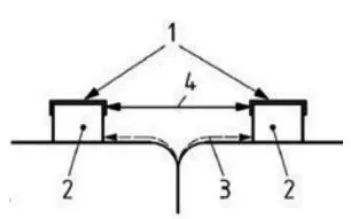
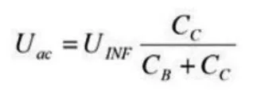
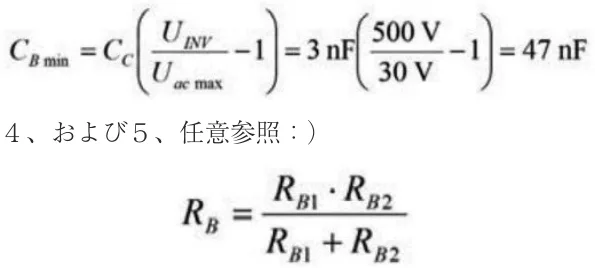
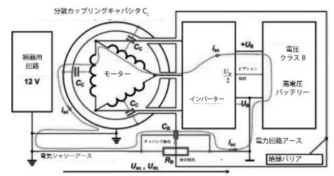
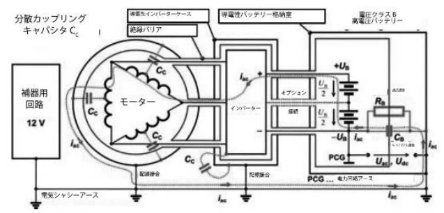
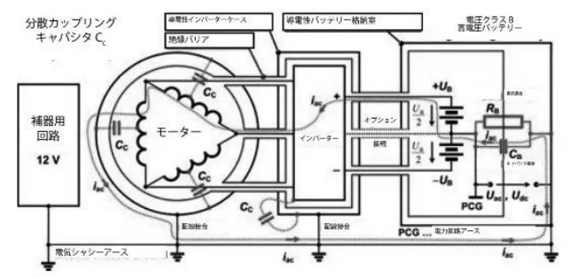
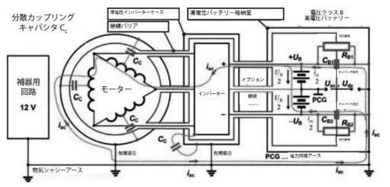
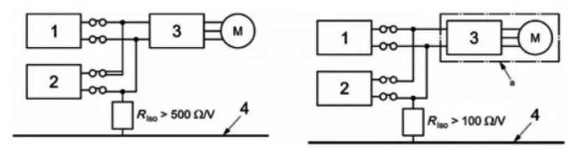

第4編カーボンニュートラル活動に関する共通規定
JAF の公式サイトではありません。JAF が公開する PDF を自動変換した非公式の検索用アーカイブです。記載内容は必ず JAF の原本 PDF で出典をご確認ください。 検索と AI 質問つきのビューアで開く
P.1第４編 カーボンニュートラル活動
に関する共通規定
P.2第 4 編 カーボンニュートラル活動に関する共通規定
カーボンニュートラル車両および燃料の国内モータースポーツにおける普及促進を図るため、FIA国際競技規則付則J項に準じ、本共通規定を定める。
本共通規定に示すカーボンニュートラル車両および燃料については、各競技カテゴリーでその使用取扱いを決するが、原則として日本国内での使用に係る関係法令等（道路運送車両の保安基準、揮発油等の品質確保等に関する法律、等）に準拠するものであれば、オーガナイザーは特別規則にてその使用を規定することができる。
第 1 条 カーボンニュートラル車両
第 1 項 電気自動車（電気駆動式車両）の特別定義
（※FIA国際競技付則J項第251条第3項に相当）
1.1 ）想定される条件
想定される条件は、製作／サービス／メンテナンス（車両自体かそれ以外について）、正常な自動車使用、特異な自動車使用（運転事故、衝突、破片の衝突を含む）、例外的でない車両故障、例外的でない電動駆動システム故障（例えば、オーバーヒート、ソフトウェアエラー、構成部品の振動故障［これらはシステムの発達で減少する場合がある］を含む。
1.2 ）単一障害点
「単一障害点」［上記に記載される「想定される条件」を参照］は、それゆえに、例外的でないあるいは合理的に想定される故障を含むことはできない（従って、一切の疑義を避けるために、異常ではあるが例外的なものではない車両の使用、車両または電気駆動システムの故障は、手段によって要求される危険保護のレベルを損なってはならない）。
検知されない、あるいは検知できない、また連続した展開を可能にする「単一障害点」は、「想定される条件」の１つとして分類されなければならず、手段によって要求される危険保護のレベルを損なってはならない。
1.3 ）絶縁の２つのレベル
手段はすべての「想定される条件」のそれぞれについて、非常に高い信頼性で最低2つの絶縁レベルを仮定している（それにより、二重障害点の複合的可能性を極めて低く抑えられている）。絶縁の機能を意図しているが、非常に高い信頼性の通常水準を達成することは期待されていない設計、あるいは手順のすべての面は、例外的でないリスクと考えられ、それゆえに「想定される条件」とされなければならず、手段によって要求される危険保護のレベルを損なってはならない。
1.4 ）人命に危険を及ぼす電気ショック
人命に危険を及ぼす電気ショック（本編第1条第2項2.8）とは、60V DC、あるいは30V AC rms（数値はISO/ DIS6469-3.2:2010からのもの）を超える電源に人体が持続的に接続されることによって生じるものと一般には考えられている。
1.5 ）電気公道車両
（純粋な）電気公道車両とは、電気的に推進し、インフラから自立した電気的供給のみを受ける公道車両をいい、その内部で電気エネルギーが電気機械（含複数）によって駆動のための機械的エネルギー（EN 13447参照）に換されるものとする。
1.6 ）ハイブリッド電気車両
国際標準化機構（ISO）は、ハイブリッド電気車両（HEV）を、車両の推進のために少なくとも1つのRESS （本編第1条第2項7）と、１つの燃料動力源を有する自動車と定義している（ISO6469-1:2009）。
1.6.1 ）フルハイブリッド電気車両
ハイブリッド車両は、電気モーターが内燃（IC）エンジンを補助するだけでなく、いわゆるゼロエミッション方式で内燃エンジンの助力無しに車両を推進することもできる車両である。フルハイブリッドのゼロエミッション方式の距離範囲は、数キロメートル（プラグインハイブリッド電気車両、PHEV）またはそれ以下が想定されている。
1.6.2 ）プラグインハイブリッド電気車両
プラグインハイブリッド電気車両（PHEV）は、一般家庭のコンセントにプラグ挿入することに加え、車載の正規ハイブリッド充電能力を使用することで再充電できる、大型の大容量バッテリーパックを搭載したハイブリッド車両をいう。
P.3正規電気ハイブリッドが、RESSの再充電と車両の推進のために、回生制動とエンジンからのエネルギーの組み合わせを必要とする一方、プラグインは、内燃エンジンバックアップ発電機を伴う電気自動車（エクステンデッド・レンジ電気車両、EREV）として、あるいは大容量バッテリーパックを伴う正規フルハイブリッド車両としてのいずれかの操作ができる。
1.7 ）充電式エネルギー貯蔵システム（RESS）（STSY）
充電式エネルギー貯蔵システム（RESS）（STSY）は、エネルギー貯蔵手段（例：フライホイール、キャパシタ、バッテリーなど）、RESSの通常動作に必要なすべてを含む貯蔵手段を搭載、監視、管理し保護する構成部品で構成される、完全なエネルギー貯蔵装置であるが、RESSハウジングの外側にある、すべての冷却液および冷却装置は除かれる。
1.7.1 ）フライホイールシステム
フライホイールシステムとは、電気モーター／発電機のローターなど、質量システムの回転によってエネルギーを貯蔵または解放することのできる、機械的あるいは電子機械的システムをいう。
1.7.2 ）キャパシタ（蓄電器）
キャパシタ（電解キャパシタ、「スーパーキャシタ」あるいは「ウルトラキャパシタ」とも呼ばれる電気二重層キャパシタ（EDLC））は、電界に電気エネルギーを貯蔵する装置であるが、EDLCの場合は、電荷が貯蔵され、電解質内のイオンを電極へ吸着および脱離させることのできるシステムである。
1.7.3 ）トラクションバッテリー（駆動用蓄電池）
トラクションバッテリーは、RESS STSYであり、電力回路およびそれに伴い駆動モーター（含複数）へ電気エネルギーを供給し、さらに補器用回路にもエネルギー供給を行う場合がある（本編第1条第1項1.19）。
トラクションバッテリーは、運動エネルギーの変換、あるいは発電機により、または充電装置（プラグインハイブリッドおよび純粋な電気自動車用の）によって供給された電気エネルギーの中間貯蔵として使用される装置すべてと定義される。
電気的に電力回路に接続された一切の車載バッテリーは、車両のトラクションバッテリーの一体部分とみなされる。トラクションバッテリーは、バッテリーモジュール内で集積され、電気的に接続された多数のバッテリーセルから成る。
1.7.4 ）バッテリーパック
バッテリーパックとは、任意でバッテリー格納室に収められた単一の機械的組み立て品をいい、バッテリーモジュール、保持フレームまたはトレー、ヒューズおよび接触器、さらにバッテリーマネジメントシステムで構成されている。
RESSは、２つ以上のバッテリーパックで成り、パック同士の間は、適切な保護がなされたケーブル／接続具でつなげられている。
1.7.5 ）バッテリーモジュール
バッテリーモジュールとは、1つのセルまたは電気的に接続され機械的に組み立てられた一組のセルを有する単一ユニットをいう。
バッテリーモジュールは「バッテリーストリング」あるいは「ストリング・オブ・セル」としても知られる。
バッテリーパック（含複数）は、より高い電流または電圧を得るために、共につなげられた2つ以上のバッテリーモジュールから構成させることができる。これらの連結はバッテリーパックの内側にある。
1.7.6 ）バッテリーセル
1つのセルとは、正極と負極および電解液で構成される、電子化学的エネルギー貯蔵装置をいう。その公称電圧は電子化学的な組み合わせによって得られる名目上の電圧である。
1.7.7 ）トラクションバッテリーのエネルギー容量
容量C1は、通常のバッテリー操作温度で1時間以内に完全なバッテリー放電を行うためのアンペア（Ah）表示のバッテリー容量である。車載エネルギーは、車両のトラクションバッテリーの公称電圧のボルト数およびアンペアでの容量C1の積により計算される。エネルギー容量は、ワット（Wh）あるいはキロワット（kWh）それぞれで表示されなければならない。
1.7.8 ）バッテリーマネジメントシステム
バッテリーマネジメントシステム（BMS）は、RESSの一部分であり、重要な安全装置である。これは、常に、一切の充電あるいは放電状態の時にも、バッテリー製造者によって決められた特定の電圧域に、すべてのセルを保持するための監視装置および任意の充電均衡回路から成る。
P.41.8 ）電気ショック
人体を通過する電流による生理学上の現象（ISO/DIS 6469-3.2:2010参照）。
1.9 ）最大動作電圧
ACボルテージ平均二乗偏差（rms）あるいはDCボルテージの過渡電流を無視し、製造者の仕様に従って一切の通常操作条件下における電気システムに発生しうる最大値（ISO 6469-1:2009参照）。
1.10 ）電圧クラスＢ
電気構成部品あるいは回路の、最大動作電圧が各々30V ACRMSを超え1000V ACRMS以下、または60V DCを超え1500V DC以下の場合は、電圧クラスBに属するという分類付けである（ISO 6469-1:2009参照）。
1.11 ）最大電圧の計測条件
最大電圧は、RESSの充電が終了した後、少なくとも15分経過して計測されなければならない。
1.12 ）クリアランス
導電性部分間の空間を通る最短距離。
1.13 ）沿面距離
２つの導電性部分間の、絶縁固体物の表面に沿った最短距離。
1.14 ）電力回路
電力回路は、車両を動かすために使用される電気装置のあらゆる要素から成る。
電力回路は、RESS（本編第1条第1項1.7）、駆動モーター（含複数）（本編第1条第1項1.22）用の電子装置（コンバーター、チョッパー）、一般サーキットブレーカー（本編第1条第1項1.14.3）の接触器（含複数）、ドライバーマスタースイッチ（本編第1条第1項1.20）、手動操作サービススイッチ（本編第1条第1項1.14.6）、ヒューズ（本編第1条第1項1.14.2）、ケーブルおよび配線（本編第1条第1項1.14.1a）、連結具、発電機（含複数）、および駆動モーター（含複数）から成る。
1.14.1 ）パワーバス
パワーバスは、発電装置、RESS（例：トラクションバッテリー）と、電子装置と駆動用モーター（含複数）から構成される推進システムとの間のエネルギー分配に使用される電力回路である。
a.ケーブルおよび配線の絶縁タイプ
以下の定義はISO/TR 8713:2012に従うものである。
b.基本絶縁
（無過失条件での）接触からの保護を提供する活電部品（本編第1条第1項1.16）の絶縁。
c.二重絶縁
基本絶縁と補助絶縁の両方から成る絶縁。
d.強化絶縁
活電部品に適用される、二重絶縁と同等な電気ショックに対する保護を提供する絶縁システム。
注：絶縁システムについての指示は、必ずしも絶縁が均質な部分となっていることを含意するものではない。
それは、数層で構成されている場合があり、基本絶縁でも補助絶縁でも、個々に試験を実施することはできない。
e.補助絶縁
基本絶縁の故障の場合に電気ショックに対する保護を提供するための、基本絶縁に加えて適用される、独立した絶縁。
1.14.2 ）過電流トリップ装置（ヒューズ）
過電流トリップ装置とは、その設置されている箇所で一定の時間（i2t）に流れる電流（i）が、あらかじめ設定された値を超えたとき、自動的にその回路内の電流を遮断する装置である。
1.14.3 ）総合サーキットブレーカー
総合サーキットブレーカーという用語は、緊急停止スイッチ（本編第1条第1項1.14.4）により、車両のすべての電気システムを一切の電力源から遮断するために起動されるリレーおよび接触器を集合的に言及するものである。
総合サーキットブレーカーに使用される接触器（含複数）は、放電防止型でなければならない。接触器の接触溶融を避けるために、その［i2t］（切り替えの際にブレーカー接触に放散される熱エネルギーを表すアンペア平方秒特性）は、特にRESSをパワーバスに接続する際に発生する大電流の流入（サージ電流）の場合にも、総合サーキットブレーカーの適正な操作機能を保証するのに十分なものでなければならない。適切な場合には、事前充電リレーが、接触による溶接を防止するために使用されること。
P.5総合サーキットブレーカーは、機械的接触を使用しなければならず、半導体装置は認められない。
接触器は、衝突状況下でも作動が保証されなければならない。
1.14.4 ）緊急停止スイッチ
緊急停止スイッチは、総合サーキットブレーカーを制御する。
1.14.5 ）電力回路アース
電力回路アースとは、電力回路の地電位である。この典型的なものは、RESSのUBポール、あるいはRESS電圧の50%である。
1.14.6 ）サービススイッチ
サービススイッチは、RESS（STSY）ハウジングに配置され、電力回路（本編第1条第1項1.14）とすべてのRESS(STSY)装置を連結する、または切り離すものである。サービススイッチが切られている場合、その必須部分の接触器は取り外されなければならず、車両から外された状態に保たれなければならない。誰もが見ただけで、電気回路の電源が切られていることがわかること。
1.15 ）シャシーアース、車両アース、アース電位
電気シャシー（車両および車体）アース（以下、シャシーアース）とは、シャシーと安全構造体を含んだ車体のすべての伝導性部品の参照電位（車両がグリッドで再充電される場合は「アース電位」）をいう。補助アースはシャシーアースに接続されなければならない。RESSおよびモーター（含複数）および接触器などの電力回路ユニットの伝導ケースは、シャシーアースに対して強固な接続を有していなければならない。
1.15.1 ）メインアースポイント
ネットワーク内の高電流分配は、電流の流れから生じる偏移の可能性を避けるために、スターポイント形状とし、ループ状であってはならない。参照電位のスターポイントは、それゆえに、「メインアースポイント」と呼ばれる。
1.16 ）活電部品
通常の使用において、電気的に力を与えることを意図した導電体あるいは導電性部品。
1.17 ）導電性部品
電流を導電することのできる部品。
注：通常の操作条件では電気的に力を与えることが必要でないとしても、基本絶縁が故障した状態において電気的に力を与えることができるようになる。
1.18 ）露出した導電性部品
電気装置の導電性部品で、保護等級IPXXBに従い「試験指」で触れることができ、通常は活電ではないが、故障状態では活電となりえる部品（ISO/DIS 6469-3.2:2010参照）。
注1：この概念は特定の電力回路に関するものである：１つの回路内の活電部は、もうひとつの回路内では露
出した導電部分となり得る［例：車体は補器用ネットワークの活電部となりえるが、電力回路では露出導電部分となりうる］。
注2：IPXXB「試験指」の仕様については、ISO20653または IEC60529を参照。
1.19 ）補器用回路
補器用回路（ネットワーク）は、信号合図、灯火、または交信のために、および任意で内燃エンジン運転に使用される電気装置のあらゆる要素から構成される。
1.19.1 ）補器用バッテリー
補器用バッテリーとは、信号合図、灯火、または交信のために、および任意で内燃エンジンに使用される電気装置に電気エネルギーを供給するためのバッテリーである。トラクションバッテリーにより電力を供給される電気的に絶縁されたDC／DCコンバーターを、補器用バッテリー（本編第1条第1項1.7.3）の代わりに使用できる。
1.19.2 ）補器アース
補器アースは、補器用回路のアース電位である。補器アースは、シャシーアースに対して強固な接続を有していなければならない。
1.20 ）ドライバーマスタースイッチ
ドライバーマスタースイッチ（DMS）は、通常の作動条件下にて、電力回路に電圧を加えるあるいは送電を断つ装置である。
・ただし、内燃エンジンを稼動させるために必要なすべての電気装置を除き、さらに、
・以下を行うために必要なシステムを除く。
－シャシーアースと電力回路の間の絶縁抵抗を監視し、
P.6－シャシーアースと電力回路アースの間の最大電圧量を監視し、また、
－安全インジケーターを操作すること。
1.21 ）安全インジケーター（表示灯）
安全インジケーターは、電力回路が「活電中」か「安全」状態であるかを明確に示さなければならない。「活電中」は、電力回路に電圧が加わっていることを示し、「安全」は電力回路の送電が絶たれていることを示す。
1.22 ）電気モーター
電気モーターは電気エネルギーを機械的エネルギーに変換する回転機である。
1.23 ）発電機
発電機は、機械的エネルギーを電気エネルギーに変換する回転機である。
1.24 ）最大電圧の計測条件
最大電圧は、データ記録装置（DRS）経由で恒久的にFIAに監視される。
1.25 ）コクピットパッド
ドライバーの快適性と安全性だけのために、コクピットに配置される非構造体部品。すべてのそのような材質は、工具を使用することなく直ちに取り外しできなければならない。
1.26 ）主要構造体
サスペンションおよび／あるいはスプリング負荷が伝達される、車両の完全に懸架された構造体で、シャシーのフロンとサスペンションの最前点からリアサスペンションの最後点まで前後方向に伸長するものである。
1.27 ）懸架サスペンション
スプリング媒体によって車体／シャシーユニットからすべてのコンプリートホイールを懸架する手段を言う。
1.28 ）アクティブサスペンション
車両が走行中に、サスペンションあるいはトリム高のどの部分をも制御できる一切の装置。
1.29 ）安全セル
コクピットおよび電気貯蔵格納部を収容する、閉鎖構造体。
1.30 ）複合構造体
コア材質の両側に接着された2枚の外皮、あるいは1枚のラミネートを構成する重なりの組み合わせ品のいずれかから成る断面を有する、均質でない材質。
1.31 ）テレメトリー
走行中の車両とピットとの間のデータ伝達。
1.32 ）カメラ
テレビカメラ
1.33 ）カメラハウジング
カメラと、形状および重量が同一で、カメラの代わりに車両に取り付ける目的で、当該競技参加者により供給される装置。
1.34 ）ブレーキキャリパー
ブレーキディスク、ブレーキパッド、キャリパーピストン、ブレーキホースおよび取り付け具を除く、安全セルの外側の、制動圧がかかった時に力がかかる制動装置のすべての部品。固定に使用されるボルトやスタッドは、制動装置の一部とはみなされない。
1.35 ）電子制御
半導体あるいは熱イオン技術を利用するすべての命令システムあるいはプロセス。
1.36 ）開放および閉鎖区画
その区画の参照となる大きさの示された境界線の範囲内に完全に完成されている場合、その区画は閉鎖区画とされ、そうでない場合は開放区画とみなされる。
第 2 項 電気自動車（電気駆動式車両）の特別要件
（※FIA国際競技付則J項第253条第18項に相当）
2.1 ）一般電気安全
a.電気あるいはハイブリッド電気システムの単一障害点は、通常の操作状態であっても、予測不可能な故障条件下であっても、人命に危険を及ぼす電気ショックを起こることがないものであること、また使用される構成部品がいかなる状況あるいは条件（雨天など）であっても、負傷を引き起こすことがないよう保証されて
P.7いなければならない。
b.人員あるいは物を保護するために使用される構成部品は、適切な時間的長さの間、その目的を信頼性をもって満たすものでなければならない。
c.電圧クラスB（本編第1条第1項1.10）システムの中で、露出した活導電性部品は一切あってはならない。
d.直接接触がないよう保護する策は以下の１つあるいは両方で提供されること（ISO/DIS6469-3.2:2010参照）：
－活電部の基本絶縁（2.15）
－活電部へアクセスできないように、バリア／囲い構造を設置
バリア／囲い構造は電気的に導電性があってもなくてもよい。
e.電力回路の電圧が、電圧クラスB（2.9）に属する場合、「高圧電力」の警告シンボル（図1参照）が、高圧電力を通す可能性のあるすべての電気装置の保護カバー上に、あるいはその近くに表示されなければならない。ISO7010に従い、シンボルの背景色は黄色とし、周囲の境と矢印は黒であること。三角形の各辺は、最低12cmとするが、小さな構成部品に合うように小さくすることができる。
図1：電圧クラスBの構成部品および回路のマーキング
f.すべての電気あるいはハイブリッド電気車両は、電気設備の標準化および管理に関して、車両の競技が行われる国の管轄当局の要請に従わなければならない。電気およびハイブリッドの電気競技車両の電気的安全は、最低の電気安全基準として、公道走行車両の最高基準を使用していなければならない。
2.2 ）ケーブル、配線、接続器、スイッチ、電気装置の保護
a.電気ケーブルおよび電気装置は、火災および電気ショックの危険同様、機械的損傷の一切の危険性（飛石、腐食、機械故障など）から保護されていなければならない。
b.電圧クラスB構成部品および配線は、クリアランス、沿面距離（本編第1条第1項1.13）、および固体絶縁についてIEC60664の適用箇所に従っているか、ISO/DIS6469-3.2:2010に規定されている耐電圧試験に従う耐電圧容量を満たしていること。
c.プラグは、届く範囲の一切のソケットの、物理的に正しいソケットに合うことのみができなければならない。
2.3 ）塵および水に対する保護
電気装置のすべての部品は、それぞれの付則J項車両クラスに明記されるIP保護構造仕様（例ISO20653参照）を使用して保護されなければならない。しかしながら、最低でも保護構造仕様IP55が使用されなければならない（完全な防塵および噴流水保護）。
2.4 ）充電式エネルギー貯蔵システム（RESS)
2.4.1 ）設計および搭載
a.付則J項第251条に一覧のある各グループ、カテゴリーIあるいはIIで電気ドライブトレインを使用するものは、個々に最大重量および／あるいはRESSのエネルギー内容を付則J項のそれぞれの条項に明記しなければならない。
b.RESSは車両のサバイバルセル内に格納されること。RESSがサバイバルセル内に格納されていない場合、その位置と搭載部は衝突試験に合格していなければならず、FIAに承認されていなければならない。
c.ダミーのRESSを使用した衝突試験の実施が義務付けられる。ダミーのRESSはオリジナルのRESSと同一の重量と硬さを有していなければならない。ダミーのRESSはセルを除いたすべての構成部品を含み、セルは同サイズで同密度のダミーに置き換えられなければならない。
d.車両製造者は、いかなる方法であれ、車両に搭載されたRESSが衝突事故にあった場合であっても以下のように設計されていることを証明しなければならない：
・RESSの機械的および電気的安全性が保たれていること。および
・RESSも固定装置自体も、その固定点も緩むことがないこと。
e.衝突試験基準は、それぞれにクラスについて、FIA安全部により規定される。
f.RESS格納室（含複数）は、RESS格納室あるいは構成部品が変形した場合にも、導電性部品のショートを防ぐように設計されていなければならない。また、有害な液体がコクピットに流入する危険も排除されなければならない。この格納室は外側へ通じる換気のための開口部を除き、完全にRESSを囲っていなければならず、防火性（M1;A2s1d1ユーロクラス）で頑丈でRESSの液漏れを防ぐ材質で作られていなければならない。
P.8g.一切のRESS格納室（含複数）は、格納室内に引火性ガス／空気の蓄積、あるいは塵／空気の濃縮が発生しないようになっていなければならない。熱暴走の間、10秒間に３つのセルにより拡散可能なガス量を放出するために、通気システムがなければならない（データはセルの供給業者によって出される）。ガスは車両の後部より放出されなければならない。
h.RESSは電力回路から、少なくとも２つの独立したシステム（例：リレー、デトネーター、接触器、手動操作式サービススイッチなど）によって、分離させることが可能でなければならない。少なくとも１つの手動式操作システムが、さらに１つの自動式システム（BMS、ECUにより制御される）がなければならない。
i.RESSは過電流を防止するために、２つの独立したシステムを含むものでなければならない。
j.RESSおよび配線の触れることのできる導電性部品すべては、二重の隔離方策を有していなければならない。
k.電力回路に属するそれぞれの格納室には、「高電圧」の警告シンボルが提示されていなければならない（本編第1条第2項2.1e参照）。
l.ケーブル絶縁は、少なくとも－20℃から＋150℃の許容温度範囲を有していなければならない。
2.4.2 ）クリアランスおよび沿面距離
この下位条項は、ISO 6469-1:2009からの抜粋であり、通常の操作条件下での、漏出による電解液あるいは誘電媒体流出の危険による、RESSの接続端子に取り付けられた一切の取り付け具および一切の導電性部品（本編第1条
第1項1.17）を含めた、RESSの接続端子の間の追加的漏出電流の危険を取り扱う（図2参照）。
この下位条項は、60V DCを下回る電力回路（本編第1条第1項1.14）の最大作動電圧（本編第1条第1項1.9）には適用されない。
電解液漏出の発生可能性がない場合、RESSはIEC60664-1に従って設計されていなければならない。汚染度合いは、適用範囲に適切であること。
電解液漏出が発生する可能性がある場合は、沿面距離（2.12）は以下の通りであることが推奨される（図2参照）。
a.2つのRESS接続端子の間の沿面距離の場合：
d >0.25 U＋5, where：
dは被試験体RESSで計測されたmm単位の沿面距離であり
Uは2つのRESS接続端子間のボルト（V）単位の最大作動電圧である。
b.活電部品（本編第1条第1項1.16）とシャシーアース（本編第1条第1項1.15）の間の沿面距離の場合：
d 0.125 U＋5, where：
dは活電部と電気シャシー間のmm単位の沿面距離であり、Uは2つのRESS接続端子間のボルト（V）単位の最大作動電圧である。導電性表面間のクリアランス（本編第1条第1項1.12）は、最低2.5mmであること。

沿面距離およびクリアランス
1 導電性表面
2 接続端子（RESSパックあるいはRESS）
3 沿面距離
4 クリアランス
2.4.3 ）バッテリーおよびウルトラ（スーパー）キャパシタの搭載
セルおよびキャパシタは、衝突試験でセルの故障を引き起こす大きな機械的変形なく耐えるために、正確に搭載されなければならない。
2.4.4 ）バッテリーの特別規定
バッテリーセルは、火災および毒性安全性の最低要件として、UN輸送基準を満たすことが証明されていなければならない。
2.4.4.1 ）セルの化学的性質の申告
P.9セルの化学的性質の一切のタイプは、FIAがセルの化学的性質を安全とみなすことを条件に認められる。
a.バッテリーの基本的化学性質および安全要件は、化学性質が以下の一覧に属するものでない場合、それが最初に使用される競技の3ヶ月前にFIAに通知されなければならない。
・鉛
・亜鉛臭素
・ニッケル水素
・リチウム（リチウムイオンおよびリチウムポリマー）
b.バッテリーセル自体に、あるいは公認済みモジュールまたはパックには一切の改造は認められない。
c.鉛バッテリーについては、バルブ調節タイプ（ジェルタイプ）のみが認められる。
d.リチウムバッテリーには、バッテリーマネジメントシステムが装備されていなければならない。本編第1条
第2項2.4.4.2に特別規定が定められる。
e.競技参加者は、セルおよびパック（モジュール）生産者からの安全に関わるデータを明記した書類を提供しなければならない。
f.セル供給業者は、セルの特有の化学的性質について安全指示を提供しなければならない。
g.セルが空輸についてUN証明を必要とする場合は、バッテリーマネジメントシステム（本編第1条第2項
2.4.4.2）との組み合わせてセルの安全性が要求される。
h.競技参加者は、加熱（火災）および衝突の場合にどのようにバッテリーパックを取り扱うかを記載した不測事態対応計画を提供しなければならない。
2.4.4.2 ）バッテリーマネジメントシステム（BMS）
a.バッテリーマネジメントシステム（BMS）は、重要な安全装置であり、バッテリーパックの一部である。輸送あるいは停止状態を除き、常にセルとバッテリーパックに接続されていなければならない。
b.BMSは、一般的に、セル製造者によって推奨される通りに、バッテリーの化学的性質に適正なものでなければならない。
c.熱暴走しがちなセルは、セル製造者に確立された仕様外でセル（モジュール）を作動させることは厳禁とする。
d.過負荷あるいはバッテリー故障の間に、熱暴走が起こるのを防ぐため、バッテリーマネジメントシステムには温度管理が考慮されていなければならない。
e.人体に危険な第一障害状態での一切の発熱は、電流、電圧あるいは温度の監視に基づくなどの、適切な方策によって防がれること。
f.BMSは保障システムであり、内部的な不具合を検知し、バッテリーからの／バッテリーへ伝えられる電力削減を起動させなければならず、BMSがバッテリー作動が安全でないと判断する場合に、バッテリーのスイッチを切らなければならない。
g.バッテリーパック内のバッテリーセルの組み立ては、適切な技術知識を持った製造者によって実施されなければならない。バッテリーパック、モジュールおよびセルの仕様は、生産されたバッテリーパックの安全を証明する前述の製造者発行の書類と共に、事前にASNによって実証され、承認されなければならない。
2.4.5 ）ウルトラ（スーパー)キャパシタの特別規定
a.競技参加者は、キャパシタのタイプに関する書類を提供しなければならない。
b.キャパシタ自体に、または公認されたモジュールやパックに改造を行うことは認められない。
c.競技参加者は、キャパシタおよびパック（モジュール）生産者からの安全に関する書類を提供しなければならない。
d.競技参加者は、加熱（火災）および衝突の場合にどのようにパックを取り扱うかを記載した不測事態対応計画を提供しなければならない。
2.4.6 ）フライホイールシステムの特別規定
a.フライホイールシステムの格納室が、システム故障（例：フライホイールが最高速度にあるときのロータークラッシュ）の場合にも十分耐える強さを持っていることを証明するのは、いかなる方法であれ、競技参加者の責務である。
b.ドライバー（およびコ･ドライバー）の安全は、たとえ衝突の衝撃を受けた場合にも、すべての車両の状態条件においても、競技参加者によって保証されなければならない。
c.競技参加者は、フライホイール生産者からの安全に関する書類を提供しなければならない。
2.5 ）電子工学部品
P.10電子工学部品（コンバーター、チョッパー）は、大きな故障（例：ショート、過電圧、電圧不足）を検知するために必要な装備を備えて設計されていなければならず、重大な損傷が検知された場合には、電気駆動系統を遮断する機構を備えていなければならない。
2.6 ）電気モーター
シングルロックホイールの場合、電気駆動系あるいは電気モーター不良に対して、車両の最大の安定性を得られるような対策あるいは装置が予め想定されなければならない。
－ ひとつのモーターが従来の方法でディファレンシャルを伴い駆動軸を推進する（これは十分に良いものと認められている信頼性の高い解決策である）。
－ モーターがクラッチ（シヤーピン）およびプラネタリギアにより、1本の駆動ホイールへつなげられる。
－ シングルロックホイールの場合、自動システムが車軸の反対側のホイールをロックすることができる。
2.6.1 ）容量性カップリング
a.通常Yキャパシタより発し、EMCのために利用される、電圧クラスB（本編第1条第1項.1.10）電位と電気シャシー（本編第1条第1項.1.15）間の容量カップリングあるいは寄生性容量カップリング。
ISO/DIS6469-3.2:2010は以下を制定している：
－ DC高電圧に触れた際、このような容量性カップリングの放電によるDC身体電流は、静電総エネルギー
容量が電気的に力を与えたれた電圧クラスBの活電部（本編第1条第1項1.16）と、電気シャシー（本編第1条第1項1.15）との間で、最大作動電圧（本編第1条第1項1.9）にて0.2ジュール未満であること。総静電容量は、関与する部品および構成部の設計値を基礎に計算されること。
－ AC高電圧に触れた際、このような容量性カップリングによるAC身体電流は、IEC60950-1に従う計測で、
AC身体電流が５mAを超えないこと。
b.コンバーター（チョッパー、電子工学部品）によって駆動する一切のモーターは、多少その設計に依存しているそのケースなどに、容量性カップリングを示す。エネルギーの損失ではあるが排除することはできない、この既知のものを最小化するという目標が常にある。
c.分散キャパシタンスCc（図3参照）により導入された容量性カップリングは、車体を含め、電力回路と電気シャシーの間のAC電流iacとなる。それゆえ、シャシーアースと電力回路の間にキャパシタ接合CBを伴う非ガルバニック接続が、電力回路アースとシャシーの間の最大AC電圧Uacを30V AC rms未満の安全電圧レベルに制限するために、導入されなければならない。
キャパシタ接合CBおよび集中カップリングキャパシタンスCcは、インバーター出力電圧UINVのAC電圧デバイダーを表している。それゆえAC絶縁バリア電圧Uacは次のように計算される：

上記の計算は、AC電流iacが正弦波から遠く離れているために、絶縁バリア電圧Uacの推定値を出す。これゆえ、測定値は、キャパシタ接合CBにより電圧Uacが30V AC rms未満の安全電圧レベルにまで削減されていることを証明しなければならない（図3、4、および5、任意参照：CB=CB1+CB2、図6）。
キャパシタ接合の最小値CB minの概算値の例：
以下を想定する：UINF=500V AC、分散カップリングキャパシタンスは合計CC=3nFになり、最大許容絶縁バリア電圧Uac=30V rms。
これゆえに、最小キャパシタ接合値CB minは次のように計算される：

d.抵抗接合RB（図3、4、および5、任意参照：）
図6は、電力回路とシャシーアースの間の絶縁バリアにわたって、DC電圧Udcを制限する。抵抗接合の値は、電圧クラスBシステム（充電）の最大作動電圧＋UBに関連して、少なくとも500Ω/Vであること。
抵抗接合の値RB1およびRB2を検査する計測手順は、ECE協定ECER100/01（WP.29/2010/52）,Nov./
P.11Dec.2010添付書類「絶縁抵抗計測方法」およびISO基準6469-1:2009（E）第6条1項「RESSの絶縁抵抗」に示されている。
e.製造者はFIAの承認を得るべき、それ自身の技術的解決策を提案することができる。

非導電性インバーターケースおよびバッテリー格納室。
固定子巻線の間の分散キャパシタンスにより、ローターおよびケース容量性カップリングは、電力回路とシャシーアース間の絶縁バリアにわたってAC電流iacとなる。適切なサイズのキャパシタ接合CBは、電圧Uacを安全電圧レベルにまで削減する。キャパシタ接合の名目上の電圧は、少なくともインバーターの最大出力電圧について明記されなければならない。

導電性インバーターケースおよびバッテリー格納室は電気シャシーアースに接合される。接合抵抗RBおよびキャパシタCBは、電気シャシーアースから電力回路アースにつなげられ、この場合はバッテリーマイナス－UBである。

導電性インバーターケースおよびバッテリー格納室は電気シャシーアースに接合される。抵抗接合RBおよびキャパシタCBは、電気シャシーアースから電力回路アースにつなげられ、この場合はバッテリー電圧の50%＋UBである。

導電性インバーターケースおよびバッテリー格納室は電気シャシーアースに接合される。抵抗接合RB1およびRB2および、キャパシタ接合CB1およびCB2は、電気シャシーアースからバッテリー端子＋UBおよび－ UBにつなげられ、電力回路内で、バッテリー電圧の50%＋UBでとなる。
2.7 ）電気ショックの防護
a.電気装置のいかなる部分も、電圧クラスB（2.9）の制限を超える電圧を帯びていてはならない。
b.ISO/DIS6469-3.2:2010は以下を制定している：
一般的な規則として、電圧クラスBの電気装置の露出した導電性部品は、露出した導電性のバリア／囲い構造を含め、以下の要件に従い、等電位化のため、電気シャシーアースに接合される：
－ 等電位化電流路を形成するすべての部品（伝導体、連結部）は、単一障害状態での最大電流に耐えること。
－ 人間が同時に触れることのできる、電圧クラスBの電気回路にあるいずれの2つの露出した導電性部品
の間の等電位化抵抗は、0.1Ωを超えないこと。
c.シャシーあるいは車体のどの部分も、障害電流を除き、電流帰還路として使用されないこと。
d.電力回路アースと車両のシャシー（車体）との間は、それぞれ60V DCあるいは30V AC以下が認められる。
e.すべての電子監視システムは、シャシーアース（補器用電力アース）と電力回路アースの間の電圧レベルを継続的に検査しなければならない。監視システムが300kHz以下の周波数で、60V DCあるいは30V ACを超える電圧レベルのDCまたはACを検知した場合、監視回路が反応し（50ms未満以内で）、それぞれの車両クラスに明記された動作を起動しなければならない。
2.8 ）等電位ボンディング（接合）
a.高電圧が車両の低電圧システムにつなげられたAC接続である場合、故障モードを軽減させるために、車体のすべての主要な導電性部品は、適切な寸法の配線あるいは導電性部品により、車両シャシーに等電位ボンディングされていることが義務付けられる。
b.ボンディングは、配線、ケーブルあるいはハーネスが接続している、あるいはその非常に近くを通過している一切の構成部品で、絶縁の一箇所故障によって電流を導電することができ、さらに着座したドライバー、ピットストップ中にメカニックやマーシャル、救急作業中に医療スタッフが触ることができるものすべてに要求される。
c. 等電位ボンディングが必要な一切の構成部品は、寄生性容量のある一定のレベルでのACカップリング故障を想定し、接触に危険な電圧（30V AC）を防ぐための抵抗を伴い、メインアースポイント（本編第1条第1項1.15.1）に接続される。
d. メインアースポイント（2.14.1）は、付則J項のそれぞれの条項の中で、電気駆動系統を使用する各車両クラスについて個々に明記されなければならない。
2.9 ）絶縁抵抗の要件
ISO/DIS6469-3.2:2010は以下を制定している：選択された保護方策が最低絶縁抵抗を要求する場合は、DC回路では少なくとも100Ω/V、AC回路では少なくとも500Ω/Vであること。参照値は、最大作動電圧（本編第1条第1項1.9）とする。
注：電気ショックの危険は、電流が人体を通過することにより、その値と通電の長さによるものが発生する。有害な電流の影響は、DC、ACについて、それぞれIEC/TS 60479-1、2005の図22のDC-2のゾーン、また図20のAC-2のゾーンに入れば避けることができる。
人体に有害な電流、およびその他の波形、周波数についてはIEC/TS60479-2に記載されている。DCについては100Ω/V、ACについては500Ω/Vの絶縁抵抗の要件は、それぞれ、10mAと2mAの身体電流を認める。

1 燃料セルシステム
2 トラクションバッテリー
3 インバーター
4 車両電気シャシー
5 AC回路
図7
導電的に接続されたACおよびDC回路を伴う電圧クラスBシステムの絶縁抵抗の要件。
注：数値は例として燃料電池ハイブリッド電気自動車（FCHEV）に基づいている。回路全体について上記の要件を満たすには、構成部品の数と、属する回路の構造により、それぞれの構成部品の絶縁抵抗をより高いもにすることが必要である。DCおよびAC電圧クラスB電気回路が導電的に接続されている場合（図7参照）、以下の2つの選択肢のうちの一つが、満たされること：
－ 選択肢1：組み合わせ回路については少なくとも500Ω/V要件を満たす；あるいは
－ 選択肢2：本編第1条第2項2.9.1に規定されている追加の保護方策の少なくとも1つがAC回路に採用
されている場合、完全に導電的に接続されている回路について、少なくとも100Ω/V要件を満たす。
2.9.1 ）ＡＣ回路の追加の保護方策
本編第1条第2項2.1に規定される基本保護方策に追加して、またはそれに代えて、以下の方策の1つ、あるいは組み合わせが、単一障害の保護のために故障を処理すべく適用されること。（ISO/DIS6469-3.2:2010参照）：
－ 1つまたは複数の、絶縁層、バリアおよび／あるいは囲み構造を追加する。
－ 基本絶縁に代えて、二重のあるいは強化された絶縁措置。
－ 車両のサービス寿命に渡り提供される、十分な機械的強固さおよび耐用性を備えた、堅牢なバリア／囲い構造。
注：堅牢なバリア／囲い構造は、電力制御の囲い構造、モーターハウジング、接続具ケースおよびハウジングなどを含むが、それに限られない。それらは、基本および単一障害保護要件の両方を満たすために、基本バリア／囲い構造の代わりに、単独方策として使用できる。
2.10 ）シャシーと電力回路の間の絶縁監視
a.絶縁監視システムは、電圧クラスB（本編第1条第1項1.10）システムとシャシー間の絶縁バリアの状態を監視するために使用されなければならない。
b.監視システムは、シャシー（車体）と導電的に接続された電圧クラスB回路全体の間では、DC絶縁抵抗Risoを計測しなければならない。最低絶縁抵抗Risoは、本編第1条第2項2.9に示される。
絶縁欠陥が検知された場合のシステムの反応は、国際モータースポーツ競技規則付則J項の各車両クラスについて個々に明記され、ISO/DIS 6469-3.2:2010に明示されている条項に従わなければならない。
電気DCショックから人体を守るための装置の例：
Bender社 A-ISOMETER iso-F1。
c.ISO 6469-1:2009に示されている測定手順は、車載の絶縁抵抗監視システムの検査および較正に使用されなければならない。以下の2つの別個の絶縁抵抗値が検査されなければならない：
－ 電気シャシーに関する、伝導的に接続された電圧クラスBシステム全体の絶縁抵抗Riso
－ 電力回路から切り離された時の、RESSの絶縁抵抗Riso
2.11 ）電力回路
電力回路（本編第1条第1項1.14）の電圧が電圧クラスB（本編第1条第1項1.10）に属する場合、この電力回路はシャシー（車体）から、また補器用回路から、適切な絶縁によって電気的に分離されていなければならない。
2.12 ）パワーバス
パワーバスの最大電圧は常に決して1000Vを超えることがあってはならない。
P.14パワーバスに属する、コンデンサ全体にわたる電圧は、パワーバスのすべてのエネルギー源（発電機、RESSおよび充電ユニット）から切り離された後2秒以内に60ボルト以下に落ちなければならない。
2.13 ）電力回路配線
a.電流容量が30mAを超える電力構成部品（例：モーター、発電機、インバーターおよびRESS）を接続するすべてのケーブルおよび配線は、電力回路から絶縁されている追加の内蔵センスワイヤーおよび同軸導電性シールドを有していなければならない。このセンスワイヤーは、絶縁欠陥あるいは損傷した電力配線を検知できる。絶縁の欠陥あるいは電力配線の損傷があれば、電子監視システムは絶縁欠陥を検知しなければならない。絶縁欠陥が検知された場合、システムの反応は、付則J項に一覧のある各車両クラスについて個別に明記される。
b.センスワイヤーあるいは電力回路配線シールディングは、シャシーアースにつなげられなければならない。その場合、絶縁監視システム（本編第1条第2項2.10）は分離欠陥のための起動装置の役割を果たす。
c.電圧クラスB（本編第1条第1項1.10）のケーブルおよびハーネスの外皮で、囲いの中あるいはバリア後方にないものは、オレンジ色でマークされていること。
注1：電圧クラスBコネクターは、コネクターの取り付けられているハーネスによって識別できる。
注2：オレンジ色の仕様は、マンセル色体系に従い、ISO/DIS14572:2010に、またアメリカでは（8.75R5.75/12.5）
に、日本では（8.8R5.8/12.5）に例が示される。
d.圧力（例：機械的、熱、振動など）にさらされる電力回路配線は、適切なケーブルガイド、囲い構造および絶縁コンジットの中に保護されなければならない。
2.14 ）電力回路コネクター、リードコンタクト、自動切り離しなど
a.電力回路コネクターには、正確に合うものでない限り、プラグあるいはコンセントいずれかに活電接触があってはならない。電力回路コネクターが外れている場合、例えば同一コネクターの中で警報接点が足りないなどの場合に、自動式システムは検知しなければならず、またプラグとコンセント両方から高電圧防止／除去を行わなければならない。コネクターが外れている時に活電である場合、高電圧は直ちにスイッチを切らなければならず、プラグとコンセント両方の接触部の残留電圧はすべて、車両クラスに別の定めがない限り、2秒以内に安全レベルに放電されなければならない。取り外しが可能なコネクターキャップのみで保護されている活電端子を有することは認められない。
b.コネクターが差し込まれた状態で、保護等級IP67の環境シーリング。
c.コネクターが外れている状態で、接触面からケーブルアセンブリまで、IP66の環境シーリング。
d.コネクターは相対湿度（RH）98％で最小絶縁耐力1.5kV（高湿度環境の必要を満たすため）。
e.コネクターは相対湿度（RH）40％で最小絶縁耐力5kV。
f.ピンとソケット両方に、またプラグおよびコンセントに、完全に覆われた誤接触防止型接続部が要求される場合、車両クラスに明記されなければならない。
g.使用中の最大予想電流ではない平均実効電流に適切な最大コネクター使用定格電流。例えばショートが起きている間。
h.高いレベルの振動に耐えるコネクターシェル。
i.空輸およびトラック搭載走行の必要を満たすため、－20～＋150℃かそれ以上の許容温度範囲のコネクター。
j.機械的強度およびシーリングに備えるための機構をケーブルアセンブリに提供する。
k.事故の場合に備えて、コネクターシェルに損傷を与えることなく、プラグあるいはコンセントのいずれかで高電圧にさらされる可能性のある、「スナッチフリー」切り離しを提供する。コネクターはケーブルが損傷する前に分離しなければならない。
例外：安全セル（本編第1条第1項1.29）の内部にあり、電力回路（本編第1条第1項1.14）に属するケー
ブルで接続されている構成要素は、スナッチフリーの切り離しを使用する必要はない。
2.15 ）ケーブルの絶縁強度
a.すべての活電部は、事故的接触に対して保護されていなければならない。機械的な抵抗が十分でない絶縁素材、つまり塗装、エナメル、酸化物、繊維による皮膜（含浸させている、あるいはいない場合も）または絶縁テープは、認められない。
b.各電気ケーブルは、それぞれの回路電流について定格されていなければならず、適切な絶縁がなされていなければならない。
c.すべての電気ケーブルは、個々の導電体の容量に従い、過電流故障のないように保護されていなければなら
P.15ない。
d.電気装置の配線およびケーブルを含むあらゆる部品は、すべての活電構成部品と車体との間に最低絶縁抵抗を有していなければならない。
・電圧クラスBシステムに属する装置については、シャシーへの絶縁抵抗は最低500Ω/Vでなければならない(ISO/DIS 6469-3.2:2010)。
・絶縁抵抗の計測は、少なくとも100ボルトのDC電圧を使用して実施されなければならない。試験は、濡れた状態での車両の絶縁抵抗を確認し、値を定めるために実施されなければならない。
2.16 ）ドライバーマスタースイッチ
すべての競技車両は、ドライバーマスタースイッチ（DMS）を装備していなければならない。
・DMSは、運転位置に着座し、安全ハーネスを締めたドライバーが、ステアリングホイールを正規の位置に取り付けた状態で操作できるものでなければならない。
・DMSは総合サーキットブレーカーから分離されていなければならない。
・DMSのスイッチがアクティブの場合、アクセルペダルが押されなくとも、ギアレバーがニュートラル（N）またはパーキング（P）位置からドライブ（D）へと移されたオートマチックギアボックスが搭載された内燃エンジン車両のように、車両はゆっくりと前進しなければならないが、車両は「アクティブ・モード」（DMSが点いた状態）で放置されると、偶発的に加速器（アクセル）に触れた場合は、車両が動いてしまうことになる。
2.17 ）総合サーキットブレーカー
a.すべての車両は、十分な容量の総合サーキットブレーカー（本編第1条第1項1.14.3）を装備していなければならない。しかしながら、サーキットブレーカーを搭載することで、メイン電気回路がドライバーに近接することのないよう注意が払われなければならない。
b.緊急停止スイッチ（本編第1条第2項2.18）あるいは衝突検知をする任意のシステムによって起動されたならば、総合サーキットブレーカーは直ちに以下を実施しなければならない。
－ RESSの各バッテリーパックの＋Ueと－Ueの両極を、電力回路の残りの部分（RESSから電子工学部品
および電気モーターなどの電荷部）から絶縁する。
－ 一切の電気モーターからトルク生産能力をすべてを停止する。
－ 電力回路内のアクティブ放電回路を有効にする。
－ 補器用バッテリーを補器用回路から分離する（補器用バッテリーおよび、また可能性としてはオルタネ
ーター、灯火、ホーン、点火、電気制御装置などの電荷からも分離）。
－ ハイブリッド車両の内燃エンジンを直ちに停止する。
c.総合サーキットブレーカーのマーキング位置は、車両クラスに明記されなければならない。
d.衝突検知のための自動システムが車両クラスに明記されている場合は、それが総合サーキットブレーカーを自動で起動させなければならない。
e.各バッテリーパックの＋Ueと－Ueの両極を絶縁するために使用される総合サーキットブレーカーの各装置は、このバッテリーパックの一部でなければならない。
f.総合サーキットブレーカーを制御する電子ユニット（ECU、BMSなど）は、総合サーキットブレーカー解除すべての後で、少なくとも15分間稼働したままでなければならない。
2.18 ）緊急停止スイッチ
a.1つの緊急停止スイッチ（本編第1条第1項1.14.4）が、車両に通常に着座し、ハーネスを装着したドライバーが、ステアリングホイールを正規の位置に取り付けた状態で容易に操作できなければならない。
b.少なくとも1つの緊急停止スイッチが、クローズドカーの外側から操作可能でなければならない。
c.緊急停止スイッチは、ドライバーマスタースイッチとして使用することはできない。
d.車両クラスでの要求がある場合、緊急停止スイッチは、消火器も操作することができる。
表１：緊急停止スイッチ（ESS、本編第1条第2項2.18および本編第1条第1項1.14.4）、およびドライバーマスタースイッチ（DMS、本編第1条第2項2.16、および本編第1条第1項1.20）により、総合サーキットブレーカー（GCB、本編第1条第2項2.17および本編第1条第1項1.14.3）を作動（＝接触器開＝電流遮断＝オフ）
| ESS作動 | ESS開放 | |
| DMSオン | GCBオフ | GCBオン |
| DMSオフ | GCBオフ | GCBオフ |
表２：緊急停止スイッチ（ESS、本編第1条第2項2.18および本編第1条第1項1.14.4）、およびドライバーマスタースイッチ（DMS、本編第1条第2項2.16、および本編第1条第1項1.20）により、電力回路（本編第1条第2項2.14および本編第1条第1項1.14）の中で、アクティブ放電回路（本編第1条第2項2.14および2.17b）を有効にする（＝アクティブ＝スイッチオン＝オン）
| ESS作動 | ESS開放 | |
| DMSオン | 放電システムオン | 放電システムオフ |
| DMSオフ | 放電システムオン | 放電システムオフ（＊） |
（＊）アクティブ放電回路は、車両がまだ動いており、駆動モーターから 回復エネルギー
が利用可能である限り、システムの過負荷を避けるため、機能しない状態（オフ）にしておかなければならない。
2.19 ）過電流トリップ（ヒューズ）
a.RESSには、バッテリーあるいはスーパー（ウルトラ）キャパシタ囲い構造内でショートが発生した場合に備えて、ヒューズあるいは同等のものを備えなければならない。そのようなヒューズすべては、実装の荷電ケースにて作動の確認試験と証明がされなければならない。
b.ヒューズおよびサーキットブレーカー（再設定可能な電子機械的ヒューズ）は、受け入れ可能な過電流トリップである。超高速電子回路ヒューズおよび高速ヒューズは適切なタイプである。
c.ヒューズのような電流制限装置が、RESS格納室の中に、また各電力回路内の適切な位置に取り付けられなければならない。
d.いかなる状況にあっても、過電流トリップを、総合サーキットブレーカー（緊急停止スイッチ）に置き換えてはならない。
2.20 ）充電ユニット（車載外）
a.電気あるいはプラグインハイブリッド電気車両（本編第1条第1項1.6.2）の、ガルバニック絶縁メイン充電ユニット（チャージャー）は、それぞれの競技が開催される国の適用規定に定められたすべての安全規定を満たしていなければならない。
b.チャージャーは、車両アース（本編第1条第1項1.15）にグリッドのアース電位をつながなければならない。
c.チャージャーは、チャージャーケーブル（含複数）を保護するためにヒューズ（含複数）を有していなければならない。
d.充電ケーブルの１つの端部にあるコネクターは、ケーブルが損傷する前に分離しなければならない（例えば、掛け金無し／ロックタイプのコネクターを使用することによるなど）。
e.車両の動きは、グリッドに接続されている間、自動的に抑制されなければならない。
f.DC充電ケーブルコネクター（含複数）は、分極化され、不正確な極性接続が不可能なように配備されていなければならない。
g.チャージャーメインスイッチは、すべての電流が流れる導電体を切り離さなければならない。
h.車両駆動システムは、充電が開始される前にアース欠陥の検査がされなければならない。
i.車両駆動システムは、バッテリーが充電されている間にエネルギー供給がなされてはならない。
j.充電は常にBMS（本編第1条第1項1.7）の監視の下で行われなければならない。
2.21 ）補助バッテリー
a.補助バッテリーはトラクションバッテリーを再充電するために使用されることが決してあってはならない。競技の期間を通じ、補助の電力回路に供給しているバッテリーの電圧は60V以下でなければならない。
b.トラクションバッテリーによって電力供給されるDC-DCコンバーター（本編第1条第1項1.7.3）が補助バッテリーの代用として使用されている場合、車両クラスに灯火システムが要求されているならば、（国内および／あるいは国際基準または要件に適合するよう）トラクションバッテリーに適切な予備エネルギーが常に維持されていなければならない。
2.22 ）安全インジケーター（表示灯）
a.安全インジケーターは車両が危険な状態になった場合に警告を発するもので、すべての車両クラスに求められる。
P.17b.インジケーターの色、位置、機能および接続についての要件は、車両クラスに明記され、その他のシステムが適所に装備されない限り、以下の要件を満たさなければならない。
c.これらのインジケーター「ランプ」は、LEDあるいは同様の信頼性の高い装置が用いられなければならなず、色は赤でなければならず、雨天用灯火あるいはブレーキランプと間違えることのないよう取り付けされなければならない。
d.それらは、予想される灯火条件に適切でなければならない。例えば、直接太陽光を受けた中で見えなければならない。
e.インジケーターは、ドライバーや人員に電力回路が通電状態であり、車両が予想外の動作をする場合があることを警告する。車両内に着座したドライバーが、ステアリングホイールを取り付けた状態で見ることができ、また車両に外側から作業する人員にも見えなければならない。
f.車両クラスにより求められる場合、ドライバーが搭乗していない状態で車両が偶発的に運転されることを防ぐ方策が提供されていなければならない。
g.電力回路に60V DCを超える電圧（あるいは車両を動かすに十分な電圧のいずれか低い方）がかかっている時に、インジケーターはそれを表示しなければならない。走行準備表示ライト 車が動くことができることを示すために、スロットルペダルが作動している場合、白色灯（前部）とオレンジ色灯（後部）が点灯し、車両の前部と、車の中心線に平行に後部をそれぞれ照らさなければならない。
| レインライト | 走行準備表示ライト | |||||
| 優先度の 高い順 （１つ上） | 内容 | 条件 | On時間 | Off時間 | On時間 | Off時間 |
| 1 | 高電圧OFF | パワーバス電圧 ＜60V | off | Off | ||
| 2 | RESS充電 | 車載外チャージャーに連結および パワーバス電圧 | 50ms | 2000ms | 50ms | 2000ms |
| 3 | 車両の再充電 あるいは競技 エネルギー終了 | バッテリー再充電電力 ＞15kW または競技終了時の電力カット | 250ms | 250ms | 250ms | 250ms |
| 4 | ギア（または仮想ギア）が嚙み 合っている状態 で「車両が通電状態」 | パワーバス電圧 ＞60V およびギアが噛み合っている | 常時ON | 常時ON | ||
| 5 | 高電圧ON 「車両が通電状態」という意味 | パワーバス電圧 ＞60V | 1000ms | 1000ms | 1000ms | 1000ms |
h.インジケーターは、少なくとも2つの独立した回路を使用し、衝突の場合に両方が損傷することがないように経路を決められた、フェイルセイフ機構となっていなければならない。
i.インジケーターは、
・ パワーバス上で直接可動する独立した絶縁電源（DC-DCコンバーター）より電力供給されなければな
らない。あるいは、独立した電源（充電式バッテリー）を有することができる。
・ 総合サーキットブレーカーが作動してから少なくとも15分間は電源が入ったままでなければならない。
j.車両クラスにより求められる場合は、絶縁欠陥がある場合に、追加のインジケーターがそれを表示しなければならない。これは、電力回路のスイッチが切られた後でインジケーターが操作されることを必要とし、それゆえ、インジケーターのための独立した電源と、車両をシャットダウンするための決められた手順を必要とする。
インジケーターは車の周りのあらゆる場所から見えなければならず、製造者はそれを達成するために複数の装置を搭載することがある。
| ライトステータス | RESSステータス |
| 緑 | 安全 |
| 赤点滅 | 危険（システム不良） |
2.23 ）消火器
a.消火器は、該当するクラスに応じて付則J項に従っていなければならない。
b.充填下で伝導性を発生させないことが証明され、かつ以下のリストに準拠している消火剤を備えたシステムのみが認可される：
P.18･Novec1230またはFXG-TEC FE36
c.異なるタイプの可燃性構成部品に対応するため、2種類以上の消火器タイプが必要となる場合がある。
フックで遠くから操作できる2つの外部ハンドルもなければならない。
さらに、外部から起動する手段は、総合サーキットブレーカースイッチと組み合わせなければならない。
2.24 ）衝突／火災の場合の電気／化学物質の処分／取り扱いに関する緊急対応策
「電気駆動およびハイブリッド電気車両に携わる消防員の安全と緊急対応」の書類より抜粋された条文を使用できる。
第 3 項 水素自動車の特別定義
（※FIA国際競技付則J項第251条第4項に相当）
3.1 ）圧縮ガス状水素（CGH2）
高圧（公称作動圧力700barまで）に圧縮し、常温で保管された気体状態の水素。
3.2 ）液体水素
極低温（通常－253℃）で大気圧近くに貯蔵された液体状態の水素。
3.3 ）低温圧縮水素（CcH2）
高圧（通常は350barまで）かつ低温（－40℃以下）で貯蔵された液体と気体との間の密度の高い状態の水素。
3.4 ）水素貯蔵システム
水素貯蔵容器（含複数）および高圧貯蔵容器への開口部のための一次閉鎖装置。
貯蔵する必要がある量や車両の物理的な制約によっては、複数の水素容器を含む場合がある。
3.5 ）水素貯蔵容器
水素貯蔵システム内のコンポーネントで、水素の一次容量を貯蔵するもの。水素は、圧縮された気体、液体（極低温状態）、低温圧縮された形態で貯蔵することができる。
3.6 ）圧縮水素貯蔵システム
水素燃料自動車用の水素燃料を貯蔵するために設計されたシステムで、貯蔵された水素を燃料システムの残りの部分や環境から隔離するための、加圧容器、圧力開放装置（PRD）、および遮断装置（含複数）から構成される。
3.7 ）液化水素貯蔵システム
液化水素貯蔵容器（含複数）、圧力開放装置（PRD）及び遮断装置（含複数）、ボイルオフシステム、上記構成要素間の相互接続配管（ある場合）及び取り付け具から構成されるシステム。
3.8 ）低温圧縮水素貯蔵システム
液体貯蔵と圧縮ガス貯蔵の間のハイブリッド貯蔵システムで、極低温流体を保持し、内圧に耐えるように設計されていなければならない。
3.9 ）圧力開放装置（PRD）
特定の性能条件の下で作動させた場合に、加圧システムから水素を放出し、それによってシステムの故障を防止するために使用される装置。
3.10 ）熱作動式圧力開放装置（TPRD）
温度によって作動して水素ガスを開放・放出する非閉塞型PRD。
3.11 ）シャットオフバルブ（SOV）
電源に接続されていない場合には「閉じた」位置にデフォルトで設定され、自動的に作動させることができる、貯蔵容器と車両の燃料システムとの間のバルブ。
3.12 ）圧力調整器
圧縮ガス状水素システムについて、燃料電池システムの動作のために適切なレベルに圧力を下げるための、水素システム内の圧力調整器（含複数）。
3.13 ）燃料電池システム
燃料電池スタック（含複数）、空気処理システム、燃料流量制御システム、排気システム、熱管理システム、水管理システムで構成される推進システム。
水素と酸素（空気）を供給すると電気化学的に発電して自動車を推進し、同時に電力と水を発生させる。
3.14 ）高圧（HP）水素コンポーネント
公称作動圧力が3.0MPaを超える水素を含む燃料ラインおよび取り付け具を含むコンポーネント。
3.15 ）中圧（MP）水素コンポーネント
P.19公称作動圧力が0.45MPaを超え、3.0MPaまでの水素を含む燃料ラインおよび取り付け具を含むコンポーネント。
3.16 ）低圧（LP）水素コンポーネント
公称作動圧力が0.45MPaまでの水素を含む燃料ラインおよび取り付け具を含むコンポーネント。
3.17 ）水素充填システム
燃料容器が、燃料供給ノズルが切り離された際に、水素の車両外への漏出を防止する逆止弁を含むように構成されているシステム。
3.18 ）充填容器
燃料補給ステーションのノズルが車両に取り付けられ、水素が車両に移送される装置。
3.19 ）逆止弁
車両の充填ラインの逆流を防止するノンリターンバルブ。
3.20 ）水素配管システム・取り付け具・連結具・補助装置
使用中に予想される温度と圧力の条件に合わせて設計された（適切な管厚、サポートシステムなど）水素システムの構成要素間の相互接続配管、取り付け具、連結具、および補助装置。
3.21 ）セーフティリリーフバルブ（SRV）
事前に設定された圧力レベルで開閉する装置。
3.22 ）最大許容作動圧力（MAWP）
圧力容器または貯蔵システムが通常の作動条件で動作することが許可されている最高ゲージ圧力。
3.23 ）公称作動圧力（NWP）
公称作動圧力（NWP）とは、システムの典型的な動作を特徴づけるゲージ圧を意味する。圧縮水素ガス容器の場合、NPWは、15℃の均一な温度で、完全に燃料を充填した容器あるいは貯蔵システム内の圧縮ガスの定格圧力である。
3.24 ）最高充填圧力（MFP）
充填中に圧縮されたシステムにかかる最大圧力。
3.25 ）可燃性下限値（LFL）
水素混合ガスが常温常圧で可燃性になる燃料の最低濃度。空気中の水素ガスの可燃性下限値は、体積比で4%である。
3.26 ）沸点
水素が1気圧で液体状態になるために冷却しなければならない温度。水素の沸点は－252.78℃である。
3.27 ）ハザード
潜在的危害の源。
3.28 ）水素脆化
水素の能力は、金属材料や非金属材料の機械的特性を著しく劣化させる。
これは長期的な影響であり、水素システムの継続的な使用により、クラックの発生及び／又は引張強度、延性及び破壊靭性の著しい損失をもたらす。
その結果、負荷を運ぶコンポーネントの早期故障を引き起こす可能性がある。
3.29 ）水素漏れ
漏れには以下の4つのタイプがある：
透過リーク、材料の透過による水素の移動、H2分子のサイズが小さいことに固有。
スモールリーク、部品の経年劣化や保守作業のミスなどにより、小さなオリフィスから低圧で発生する漏れ。
ミディアムリーク、小口径オリフィスからの高圧または大口径オリフィスからの低圧での漏れ。
メジャーリーク、システム（TPRD、PRV）の故障や配管の破裂などの部品故障に起因する。
リーク流量はリーク容器内の圧力に大きく依存する。
圧力が高いほど流量は高くなる。液体水素の沸点は－252.78℃と非常に低いため、液体水素のリークは非常に早く蒸発する。
このように、液体の流量はすぐに気体の水素流量に変換される。
3.30 ）水素分散
空気中の水素の漸進的な混合と輸送。水素は非常に軽い気体であるため、水素雲は浮力があり、大気中で急速に上昇する。
3.31 ）水素濃度
P.20水素と空気の混合物中の水素のモル（または分子）の割合（水素ガスの部分体積に相当する）。
3.32 ）可燃性雲の形成
LFL以上の濃度の水素－空気混合物の雲が形成されるように、分散によって空気中の水素を混合すること。
3.33 ）水素貯蔵障害
水素貯蔵システムの故障は、材料の故障、熱漏れによる過度の圧力、または圧力開放システムの故障によって始まる可能性がある。
CGH2またはLH2が放出されると、発火し、火災や爆発を引き起こす可能性がある。
水素雲の移動により、保管場所よりもかなり広い範囲に損傷が及ぶ可能性がある。
3.34 ）水素貯蔵施設の破裂またはバースト
内圧の力による水素貯蔵タンクの突然の激しい破裂。
バーストは、充填過程で、衝撃、火災や過圧などの影響でタンクの外壁が劣化することで発生することがある。
3.35 ）輸送中の衝突
水素輸送システム（道路、鉄道、航空、水路）の損傷は、流出や漏洩の原因となり、火災や爆発を引き起こす可能性がある。
3.36 ）リーク検知技術
使用条件の下で水素リーク検出が短時間で確実に行われるようにするために使用される装置。リーク検出技術には、所定の閾値以上の水素ガス濃度を検出するためのガス検出器や、容器内の圧力監視に基づく検出器などがある。
3.37 ）検知警告
必要に応じて音声および視覚による警告警報を作動させる検出信号。
3.38 ）電気自動車の具体的な定義
電動車両に関連する具体的な定義については、本編第1条第1項を参照のこと。
3.39 ）安全セル
コックピットと水素貯蔵システムおよびその構成要素を含む耐衝撃性の高い閉鎖構造。
第 4 項 水素自動車の特別要件
（※FIA国際競技付則J項第253条第19項に相当）
4.1 ）一般的安全
本規則に別段の定めがない限り、またはFIAの要請がない限り、圧縮水素貯蔵システムおよび特定の構成部品は、UNECE規則R134パートⅠとⅡそれぞれに従い認証されなければならない。
燃料系部品は、国際規格ISO12619シリーズの要求事項に合致していなければならない。
水素に関する危険解析をFIAに提出しなければならない。この解析には、FMEA（故障モードおよび影響解析： Failure Mode and Effect Analysis）、FMECA（故障モードおよび影響致命度解析：Failure Mode and Effect Critical Analysis）、FTA（フォルトツリー解析：Fault Tree Analysis）、またはその他の適切な方法を用いることができ、車両の中、またはその周辺にいる人に危険を及ぼす可能性のある単一ハードウェアおよびソフトウェアの潜在的な故障または状態を特定する。
本規則に示される要件は、車両製造者が指定する、車両が設計された運転環境および操作条件の範囲内で満たされるものであること。
水素燃料システムの構成部品は、車両製造者が指定する通常の運転条件下で、車両の振動による損傷が生じないように配置、設置、保護されていること - FIAは、必要と判断した場合、さらに要件を追加する権利を有する。
4.2 ）参加資格のある車両
本規則は、燃料電池（含複数）または内燃機関（含複数）を搭載した水素自動車に適用する。
4.3 ）圧縮水素貯蔵システム
圧縮水素貯蔵システムは、UNECE規則R134パートIに従って認証されなければならない。この文書にある追加要件は、特別な使用条件と関連して適用される。
4.3.1 ）最大公称使用圧力（NWP）
公称使用圧力（NWP）は70MPaを超えてはならない。
4.3.2 ）圧縮ガス状水素（CGH2）の量
圧力容器1個あたりの圧縮水素の質量は、8kg以下でなければならない。
4.3.3 ）作動温度範囲の決定
P.21使用の条件および燃料補給手順に関連し、予想される作動温度が決定されなければならない。
最高使用温度は＋85℃を越えてはならない。決定された最低温度が－40℃未満である場合、極端な温度に達する可能性があることを考慮して、UNECE規則R134に従った次の試験を繰り返さなければならない。
5.2.6）極端な温度での圧力サイクル
5.3）予想されるオンロード性能の検証試験
（連続空気圧試験）
5.3.1）耐圧試験
5.3.2）周囲温度および極端な温度でのガス圧力サイクル試験（空気圧式）
5.3.3）極端端な温度での静的なガス圧リーク／浸透試験（空気圧式）
5.3.4）残留耐圧試験
5.3.5）残留強度破裂試験（油圧式）
6.1（ｃ）（付録4、1.3項）
6.2（ｃ）（付録4、2.3項）
その結果を詳細に記した報告書をFIAに提出し、検証を受けなければならない。
4.3.4 ）設計と搭載
自動車製造者は、本規則に示された搭載要件に従って車両に搭載された圧力容器および関連の高圧水素構成部品（NWP3.0MPa以上）が、通常の状態で、また極端な条件（つまり、衝突や火災等）において、圧力容器および関連機器の機械的完全性を保証し、圧力容器や固定機構自体、あるいは固定箇所またその他の構成部品も緩みや破損がないことをいかなる手段によっても証明しなければならない。
圧縮水素貯蔵システム（含複数）は、コンパートメント（19.5に定義される構造物）内に設置されなければならない。
4.4 ）検知システム
圧力容器内に温度センサー（含複数）を設置し、充填時の最高温度を超えないようにするとともに、使用中に最低許容温度を下回らないようにしなければならない。
さらに、圧力容器付属品（逆止弁、TPRD、その他の取り付け具）からの漏れ（含複数か所）の可能性を示す異常な圧力低下に関する情報を提供するために、圧力容器内、あるいは遮断弁の下流に直接圧力センサー（含複数）を取り付け、通信システムを用いた充填手順を実施しなければならない。
水素ガス漏洩検知器が搭載され、下記の表の通りに、危険な水素濃度が蓄積される可能性のある漏洩を検知しなければならない。
| ゾーン | 閾値体積比％ | |
| 警告 | 停止 | |
| コクピット環境 | 0.3% | 0.4% |
| 圧縮水素貯蔵システムコンパートメント（含複数） | 0.75% | 1% |
| 燃料電池／ICE | 0.75% | 1% |
| 燃料電池排気ライン | 3% | 4% |
これらは、上記に定められる警告と停止閾値を考慮し、規則R134の付録５の第３段落に従って試験されなければならない。
4.5 ）圧縮水素貯蔵システムコンパートメント（含複数）
すべての圧縮水素貯蔵システムは、コンパートメント内に設置されなければならない。複数の圧縮水素貯蔵システムが同じコンパートメントを共有することができる。
コンパートメント構造は、当該車両のカテゴリーに応じて、サバイバルセルまたはロールケージ/スペースフレームと一体でなければならない。
サバイバルセルの場合、コンパートメントとサバイバルセルは同じ成形工程で作られた連続した構造でなければならない。FIAにすべての技術的な詳細を添えて申請すれば、底面にボルト止めのアクセスハッチを設けることも可能である。
コンパートメント（含複数）の機能は次のように多面的である：
－制御された方法で水素漏れを監視し、換気する。
－外部からの衝撃、特にバルブシステムへの衝撃や火災に備え、圧縮水素貯蔵システムに対して、追加的な保護を提供する。
P.22－コンパートメント内の水素漏れによる爆発に備えて、ドライバーと周囲の人々を保護する。
－コックピット環境に対するリスクを軽減する。
4.5.1 ）耐火性能
コンパートメント（含複数）のすべての面は難燃性の材質（UL94 VO基準に従う）で、できていなければならない
4.5.2 ）封印
コンパートメント（複数含）は封印されなければならず、換気用の開口部を除き圧力容器（複数含）を取り囲んでいなければならない。
気密性の確認は、EN 60068-2-17（Qm法）に記載されているトレースガス法などの適切な方法、または同等の方法を用いて行うこと。リーク流量は１Pa.cm^3/s以下とすること。
4.5.3 ）換気
走行中に、また車両が静止しているときにも（車庫内、走路上など）、発火しやすい濃度の水素が蓄積されないよう、コンパートメント（複数含）には換気装置と外部への開口部を備えていなければならない。
換気は、コンパートメント内の空気中の水素濃度が、118NL/minの一定容積流量比のCHSSシステムの漏れを考慮した場合、常時、体積比で１％を超えないように設計されていなければならない。
4.5.4 ）ガス爆発防止ベントシステム
コンパートメント（複数含）には、換気不良あるいは高い漏出比となった場合に、過圧を安全に外部に排出するためのオプションとして、ガス爆発防止ベントシステムを装備することができる。
この場合、コンパートメント（複数含）は、ガス爆発防止ベントシステムが作動するまでの間、過圧に耐えられるように設計されなければならない。
4.6 ）潜在的に爆発性のある機器
可燃性の場所にある部品の導電性ハウジングは、水素放電の不用意な着火を防止するため、電気シャシーと結合していること。
電気設備は、頻繁に発生する障害（衝撃や振動を含む）または予想される誤動作の場合でも、着火源が発生しないように設計および製造がなされなければならない。
機器部品は、製造者が予測した異常事態から生じる危険性がある場合であっても、その表面温度が規定値を超えないように設計および製造されなければならず、また、空気と混合した水素を発火させる静電気放電の発生源とならないようにしなければならない。
装置は、発火源となりうる装置部品の開放が非活動時または適切なインターロックシステムによってのみ可能なように設計されなければならない。
このような部品の開放は、振動／加速度の影響を受けるレース条件や衝突条件下では発生してはならない。
IEC 60079シリーズに従って設計および試験され、グループIICのEPL Gb保護レベルに適合した装置は、この要件を満たしている。
4.7 ）燃料電池システム
燃料電池システムは、燃料電池技術に関連する典型的な危険な状況（例えば、IEC 62282-2-100の付録Aを参照）に関連するリスクを最小化するように設計され、これらの危険な状況に対して、適切に認められた試験手順で試験が実施されること。（IEC 62282-2-100 は車両に適用できないが、参考として使用でき、またはGB/T 23645-2009乗用車用燃料電池パワーシステムの試験方法も同様である）
燃料電池システムは、特定のレース条件（加速度、振動）に耐えられるように設計されていること。
4.8 ）材料に関する要求事項
圧縮水素貯蔵システムの製作で使用される材料は、国際規格ISO 19881の要件に合致し、それに準拠した関連する試験を行わなければならない。
通常の操作で水素に接触する一切の構成部品には、次のことを考慮する必要がありそれに適した材質を選択すること：
－水素との適合性（つまり、脆化など）。
－動作環境との適合性。
－耐腐食性。
極端な温度にさらされる可能性がある場合、ISO 11114-4、ISO/TR 15916、およびEN 10229などのような規格には、ISO 12619シリーズで定義された試験方法と組み合わせて、材料を選定するための有用な仕様が含まれている。
P.234.9 ）バルブ
水素燃料システムには、本規則で以下に概説する以下のバルブを装備しなければならない。
バルブおよびシステム構成部品は、適切に取り付けられ、かつISO 21266-1:2018に規定された要求事項に従っていなければならない。また、バルブおよびシステム構成部品は、レース中の通常メンテナンス/修理、クラッシュ状態を含み、車両の通常の運転に起因して起こりうる損害の可能性から保護されなければならない。技術的な故障、人為的なミス、および外的な原因も、これらのコンポーネントを安全に配置するために考慮しなければならない。
車両製造者は、車両へのバルブ搭載手順およびそれらの車両への取付けに関する書類を提供し、通常の操作中、あるいはクラッシュの場合に、水素漏れを防ぐための正確なメンテナンスガイドラインを作成すること。
4.9.1 ）自動遮断弁
自動遮断弁（複数含）は、UNECE規則R134パートIIに従って認証されたものでなければならない。
自動遮断弁はフェイルセーフ機構でなければならず、圧縮水素貯蔵システムから燃料電池システムまたはICEへの流れを防ぎ、圧力容器に直接、または圧力容器内に取り付けられていなければならない。すべての自動遮断弁は、次のいずれかの事象が発生した場合に閉じなければならない：
－本規則の4.4項に定義される規定閾値以上の水素濃度をコックピット環境内に測定し、水素漏れを検出する。
－異常な圧力低下による水素漏れ検知。
－本規則の4.4項に定義される規定閾値以上の水素濃度が排気ライン周辺に存在することによる、燃料電池システム、またはICEの機能不全。
－設定された加速度閾値を超える（車載加速度センサーによる）任意の方向への車両の衝撃
－緊急停止が作動した場合。
4.9.2 ）逆止弁
逆止弁（複数含）はUNECE規則R134パートⅡに従い認証されなければならない。
逆止弁は充填ラインに沿って設置され、充填ディスペンサーの接続が一旦解除されたならば、圧力容器（複数含）から充填オリフィスへの逆流を防止しなければならない。
信頼性を高めるために、最低2個の逆止弁を連続して設置することが求められる。
設置は、１つが圧縮水素貯蔵システム内（圧力容器（複数含）に取り付け）もう１つは（R134で要求されているように）燃料容器に設置する。どちらの逆止弁も、自動遮断弁の位置とは無関係に、充填ラインへの逆流を効果的に防止するものでなければならない。
4.9.3 ）過剰流量弁
高圧ラインには、異常流量が発生した場合にガス漏れを制御するために、すべての圧力容器の内側に、およびオプションで外側に過剰流量弁を、または機能的に同等なシステムを装備しなければならない（付録A-ISO 21266-1を参照）。
4.9.4 ）手動シリンダー弁（複数含）
各圧縮水素貯蔵システムには、システムに堅牢に固定される、あるいはシリンダーヘッドに内蔵される手動弁が装備されていなければならない。それは圧力容器の内容物を自動弁から隔離できるものであること。
4.10 ）水素放出システム
4.10.1 ）熱圧逃がし装置（TPRD）
圧縮水素貯蔵システムは、圧力容器ごとに［１］TPRDを装備しなければならない。
TPRD（複数含）は、UNECE規則R134パートⅡに従って認証されたものでなければならない。
TPRDは、汚れや水の浸入から保護されなければならず、車内の発火源からできるだけ離れた場所に設置しなければならない。
TPRDの偶発的な開放による重大な漏出は、圧力容器内または高圧配管内で測定された圧力降下によって検出されなければならない。
貯蔵システムのTPRD（複数含）から水素ガスを排出するためのベントライン（複数含）の出口は、キャップで保護されていること。
TPRD（含複数）の排気口は、作動した場合の影響（熱影響距離）を制限し、運転者の安全な脱出と安全な介入を可能にするように配置／方向付けをしなければならない。ベント排気（含複数）の設計と方向は、当該車両のカテゴリーに依存する。
4.10.2 ）圧力解放バルブ（PRV）遠隔操作式排出装置
本規則草稿の次回改定時に定められる。
P.244.10.3 ）中圧および低圧システムの過圧保護
圧力調整器の下流にある水素システムは、圧力調整器の故障の場合による過圧から保護されなければならない。
過圧保護装置の設定圧力は、水素システムの該当する部分の最大許容作動圧力以下であること。
4.11 ）液体水素貯蔵システム
FIAに技術書類を提出することにより、液体貯蔵システムを認可することができる。
本規則に特別な記載がある場合、またはFIAの要請がある場合を除き、水素貯蔵システムの構成部品およびその取り付け具については、UNECE GTR13規則の要件および国際規格ISO 13985、（ISO 13984）に適合していなければならない。
製造者は、以下の文書を含む技術ファイルを提供しなければならない：
－車両の定義
－水素貯蔵システムの定義
－燃料供給システムの定義
－自動車競技に関連する特定の条件を考慮したリスク分析
－検証計画の策定
－液体貯蔵システムの使用に関する現地当局からの承認
FIAは、技術資料を分析し、リスク分析および計画された緩和手段の適用可能性を評価する。
また、製造者はFIAが要求する試験要件に従わなければならない。
4.12 ）低温圧縮水素貯蔵システム
本規則草稿の次回改定時に定められる。
4.13 ）補給に関する具体的な規則
充填接続装置は国際規格ISO17268に合致していなければならない。
4.13.1 ）燃料容器（複数含）
燃料容器は、車両の外部エネルギー吸収要素（バンパーなど）の中に取り付けてはならない。
また、水素ガスが蓄積する可能性のある場所や、換気が不十分な場所には設置してはならない。
燃料容器は埃や水から保護されていなければならない。さらに、下流側の部品（例：漏出のある逆止弁）を保護するために清潔に保たなけれ、－40℃で再充填する際に凍結しないように、水分がない状態にしておかなければならない。
充填ラインは、水素貯蔵システム内への粒子の侵入を防止し、下流のバルブや圧力調整器を保護するためのフィルタを備えていなければならない。
燃料容器は，ガス気密性に影響を受けることなく（例えば，給油ホースが破断した場合など）、いかなる方向にも最低 1000N の荷重に耐えることができなければならない。
4.13.2 ）燃料補給手順
燃料補給ステーションは、ISO 19880-1の要件および現地の規制に適合していなければならない。
また該当する場合は、現地当局の承認を受けていなければならない。
補給ステーションと車両は、以下の燃料補給手順要件 a)または b)に適合していなければならない。
ａ）標準手順：
燃料補給ステーションは、低負荷用車両にはSAE J2601、高負荷用車両にはSAE J2601-2で定義された通信プロトコルを使用すること。
SAE J2601の正確な要件は、圧縮水素貯蔵システムの最大総容量に関連していることに留意しなければならない。
車両は、SAE J2799に準拠した燃料補給ステーションと通信するためのデータ伝送インターフェースを備えなければならない。圧力容器（複数含）内の温度と圧力は、車両の一切の故障同様、燃料補給中に燃料補給ステーションに伝達されなければならない。
ｂ）特定手順の場合：
・特定の車種専用に設計された双方向通信可能な手順を使用する
・手順は、自動車製造者とFIAが承認した資格を有する独立機関の両方によって承認されなければならな
い。
・この特定の手順で承認されていない車両の燃料補給は、技術的な手段により不可能でなければならない。
（ISO 19880-1がその例を示している）
P.25・自動車製造者と燃料補給ステーション製造者は、新しい手順が、直ちに、あるいは後になって危険な状
態を招くことになるような損傷をタンクに与えないことを証明しなければならない。圧力傾斜率が、ガス圧力サイクル試験で適用された圧力傾斜率（R134 4.1）を超える場合、新しい圧力傾斜率でガス圧力サイクル試験を実施しなければならない。R134と同じ成功基準が適用される。
・燃料補給ステーション製造者は、その補給ステーションがISO 19880-1の要件に従って検証されたもの
であることを証明するものを持参しなければならない。
・自動車製造者と燃料補給ステーション製造者の両方が通信インターフェースとプロトコルが独立した機
関によって検証されていることを証明しなければならない。
燃料補給がその補給ステーションによって中断された場合、燃料補給は適切なチェックリストが完成するまで、実施することができてはならない。
車両には、燃料補給ノズルが車両に接続されている間は始動できないようにするシステムが装備されていること。
補給ディスペンサーの事前に定義された周囲に点火源を置くことは禁止されている。事前に定義された周囲は、適用される規則に合致し、補給ディスペンサー製造者の定めるところに準拠していなければならない。
車両の容器（レセプタクル）のところに静電気放電に対する対策をとるべきである。特に：
燃料補給（または排出）を開始する前に、車両のコネクターと燃料補給（または排出）装置を電気的に接地しなければならない。
燃料補給設備のすべての金属部分、カップリングからメイン供給タンクとそのラックまでも、電気的に接地されていなければならない。
4.14 ）適格性試験
圧縮気体水素システムおよびシステム構成部品は、それ自体および車両に搭載された場合の両方において、別途文書CGH2車両試験要件に規定されている特定の試験条件に従わなければならない。
4.14.1 ）振動試験
水素システムの構成部品は、レース条件下の典型的な振動レベルを代表する振動試験を受けなければならない。
各車両カテゴリーの安全試験要件に別段の定めがない限り、振動試験手順は、ISO 12619 シリーズおよび適用可能である場合は ISO 19882に従って実施されなければならない。
TPRD（複数含）の抵抗力は、レース条件下で一般的に発生する特定の振動、および過酷な衝突の際に発生する振動を想定し（火災を伴わない）それに基づいて試験されなければならない。
4.14.2 ）火災試験
火災試験は、規則R134、付録３、および次の解説に従い、圧縮水素貯蔵システムに実施しなければならない。：第5.1章、方法２（FIAが承認する最悪の局所火災暴露区域）および第5.2章。
いずれの試験においても、以下の結果をFIAに報告しなければならない。
－発火からTPRD（複数含）を通しての排気開始までの経過時間；
－1MPa 未満の圧力に到達するまでの最大圧力と退避時間。
4.15 ）操作手順
平常時および緊急時の操作手順が確立されていなければならず、FIAは、それを適宜見直さなければならない。
4.16 ）除去（パージ）
低圧LP（0.45Mpa未満）、中圧MP（3.0MPa以下）ラインに含まれる水素を安全にパージするために、車内および車外の設備を考慮すること。
4.17 ）安全インジケーター（表示器）
車両が危険な状態にある場合にそれを警告する安全インジケーターは、すべての車両クラスに装着が求められる。可視信号と可聴信号を持つデータ伝送は、検出システムからの一点故障を防ぐために冗長性を持たなければならない。
これらのインジケーターは次の通りでなければならない：
－ドライバーが指定の着座位置で座席ベルトを締めステアリングホイールを取り付けた状態で、見えること。
－車外から車両を取り囲んでいる/救助する人から見えること。
－信頼性の高いLEDなどのデバイスを使用し、レインライトやブレーキライトと混同されないように取り付けなければならない。また、予想される照明条件に適していなければならず、例えば、日中の日差し下でも夜間走行でも視認可能でなければならない。
－4.4項で定義された濃度レベルに達したとき、または検出システムの誤動作が存在し、イグニッションロッ
P.26クシステムが "オン"（"実行"）の位置にあるか、または推進システムがアクティブ（作動状態）になっている場合に作動する。総合サーキットブレーカーが作動した後、少なくとも15分間は電源が供給されたままでなければならない。
TPRDの偶発的な開放による重大な漏れは、圧力容器内または高圧配管内で計測された圧力降下によって検出されなければならず、運転手に警告を発しなければならない。
想定される温度範囲（4.3.3）を超えた場合、運転者に警告を発しなければならない。
表示はフェイルセーフでなければならず、少なくとも2つの独立した回路を使用して、衝突時に両方とも損傷する可能性が低いように配線されていること。
4.18 ）ラベル付け
本規則草稿の次回改定時に定められる。
第 2 条 カーボンニュートラル燃料 （燃料-燃焼物）
カーボンニュートラル燃料とは、二酸化炭素をはじめとする温室効果ガスの排出量と吸収量を均衡させることを目的として製造された燃料で、下記の規定・仕様のいずれかを満足すること。
１．日本産業規格（JIS） K2202：自動車ガソリン、または K2204：軽油。
２．以下に定めるＦＩＡ国際競技規則付則Ｊ項第２５２条第９項に相当する仕様。
（※FIA国際競技付則J項第252条第9項に相当）
燃料は、95％の信頼限界値でASTM D3244基準に従って、認められるか拒否される。
競技開催地域にて入手可能な燃料が下記の仕様に合致しない場合、主催国のASNは、そのような燃料の使用許可を求めるため、FIAに特例措置の申請を行わなければならない。
１ ）燃料
燃料は以下の仕様に合致するものでなければならない：
| 属性 | 単位 | 最低値 | 最高値 | 試験方法 |
|---|---|---|---|---|
| RON | 95.0（１） | 102.0（１） | ISO 5164 ASTM D2699 | |
| MON | 85.0（１） | 90.0（１） | ISO 5163 ASTM D2700 | |
| 密度（15℃において） | kg/m3 | 720.0 | 785.0 | ISO 12185 ASTM D4052 |
| 酸素 | %m/m | 3.7 | EN ISO 22854（２） EN 13132（２） 元素分析 ASTM D5622 | |
| メタノール | %v/v | 3.0 | EN 1601 またはEN 13132 またはEN ISO 22854 | |
| 窒素 | mg/kg | 500（４） | ASTM D4629 ASTM D5762 | |
| 硫黄 | mg/kg | 10 | ISO 20846（２） ASTM D3237 | |
| 鉛 | mg/l | 5 | EN 237 ASTM D3237 またはICP-OES | |
| マンガン | mg/l | 2.0 | ASTM D3831 または （ICP-OES）EN 16136 | |
| ベンゼン | %v/v | 1.00 | IS 12177 ASTM D5580 ISO 22854（２） ASTM D6839 EN 238 | |
| オレフィン | %v/v | 18.0 | ISO 22854 ASTM D6839 | |
| 芳香族性物質 | %v/v | 35.0 | ISO 22854 ASTM D6839 |
| ジオレフィン総量 | %m/m | 1.0 | GC-MS またはHPLC | |
| 総スチレンおよびアルキル誘導体 | %m/m | 1.0 | GC-FIDを伴うGC-MS | |
| 酸化安定性 | 分 | 360 | ISO 7536 ASTM D525 | |
| DVPE | kPa | 80（６） | ISO 13016-1（２） ASTM D4953 ASTM D5191（２） | |
| 蒸留特性 | ||||
| E70℃において | %v/v | 20.0 | 52.0 | ISO 3405 ASTM D86 |
| E100℃において | %v/v | 46.0 | 72.0 | ISO 3405 ASTM D86 |
| E150℃において | %v/v | 75.0 | ISO 3405 ASTM D86 | |
| 最終沸点 | ℃ | 210 | ISO 3405 ASTM D86 | |
| 残留物 | %v/v | 2.0 | ISO 3405 ASTM D86 | |
| （１）EN 228:2012に従い、MONおよびRONについて、0.2の較正係数を減じて最終結果を算出すること。 （２）推奨される方法 （３）安定剤を添加しなければならない。 （４）オクタン価向上ニトロ化合物は認められない。 （５）競技会において、競技者がやむを得ず硫黄含有量の高い現地の燃料を使用した場合、その次に開催される大会で当該車両 から採取されたサンプルはすべて、硫黄含有量が50mg/kg未満の場合、適合するとみなされる。 （６）冬期競技においては、最大DVPEを100kPaに引き上げることができる。 |
許可される酸素添加物は、最終沸点が210℃以下のパラフィン・モノアルコールおよび（分子当たり５以上の炭素原子の）パラフィン・モノエーテルのみ。
現在販売されている潤滑剤の燃料への追加は、２ストロークエンジンの使用においては認められる。
２ ）ディーゼル
2.1 ）石油系ディーゼル燃料
燃料は以下の仕様に相当する軽油でなければならない。
| 属性 | 単位 | 最低値 | 最高値 | 試験方法 |
|---|---|---|---|---|
| 密度（15℃において） | kg/m3 | 820.0 | 845.0 | ISO 12185 ASTM D4052 |
| セタン価（２） | 60.0（１） | ISO 5165 ASTM D613 | ||
| 誘導セタン価（DCN）（２） | 60.0（１） | EN 15195 ASTM D6890 EN16715 | ||
| 硫黄 | mg/kg | 10 | ISO 20846 ASTM D5453 | |
| 多環芳香族炭化水素 | %m/m | 8.0 | IP 548 ASTM D6591（FAMEフリー燃料） EN12916（FAME含有燃料およびFAME非含有燃料） | |
| 脂肪酸メチルエステル | %v/v | 7.0 | EN 14078 ASTM D7371 | |
| 水分含有量 | mg/kg | 200 | EN ISO 12937 | |
| 総汚染量 | mg/kg | 24 | EN 12662 | |
| コールドフィルター 目詰まり点（CFPP） | ℃ | -5 | EN 116 ASTM D6371 | |
| 引火点 | ℃ | 50 | EN ISO 3679 EN ISO 2719（４） ASTM D93 | |
| 潤滑性 | μm | 460 | ISO 12156-1 ASTM D6079 |
P.28（１）FIA国際競技／選手権についてはFIAの裁量により、および／あるいは、国内／地方競技あるいは選手権についてはASNの裁量により、最大セタン価および誘導セタン価を70.0に増大することができる。混合ディーゼルについては、本編第2条2.2、2.3及び2.4も参照。（２）セタン価または誘導セタン価のいずれかが分析されなければならない。両方の分析がなされる必要はない。（３）競技会において、競技者がやむを得ず硫黄含有量の高い現地の燃料を使用した場合、その次に開催される大会で当該車両から採取されたサンプルはすべて、硫黄含有量が50mg/kg未満の場合、適合するとみなされる。（４）好ましい方法
2.2 ）バイオディーゼル（B100）
バイオディーゼルは以下の仕様に適合していなければならない。
| 属性 | 単位 | 最低値 | 最高値 | 試験方法 |
|---|---|---|---|---|
| エステル含有量 | %m/m | 96.5 | EN 14103 | |
| 密度（15℃において） | kg/m3 | 860.0 | 900 | ISO 12185 ASTM D4052 |
| セタン価（２） | 70.0（１） | ISO 5165 ASTM D613 | ||
| 誘導セタン価（DCN）（２） | 70.0（１） | EN 15195 ASTM D6890 EN16715 | ||
| 硫黄 | mg/kg | 10（１） | EN ISO 20846 ASTM D5453 | |
| 水分含有量 | mg/kg | 500 | EN ISO 12937 | |
| 総汚染量 | mg/kg | 24 | EN 12662:2008 | |
| 粘度（40℃において） | mm2/s | 1.90 | 6.00 | EN ISO 3104 ASTM D445 |
| コールドフィルター 目詰まり点（CFPP） | ℃ | -5 | EN 116 ASTM D6371 | |
| 引火点 | ℃ | 93 | EN ISO 3679 ASTM D93 | |
| 酸化安定性（110℃において） | 時間 | 6 | EN 15751（２）/EN 14112 | |
| 酸性度指数/値 | mg KOH/ g | 0.5 | ASTM D664 EN 14104 | |
| リノレン酸ME | %m/m | 12 | EN 14103 | |
| メタノール | %m/m | 0.20 | EN 14110 | |
| 遊離型グリセロール | %m/m | 0.02 | EN 14105 ASTM D6584 | |
| グループI金属（Na+K） | mg/kg | 5 | EN 14108（Na） EN 14109（K） | |
| グループII金属 | mg/kg | 5 | EN 14538 | |
| （１）競技会において、競技参加者がやむを得ず硫黄含有量の高い現地の燃料を使用した場合、その次に開催される大会で当該 車両から採取されたサンプルはすべて、硫黄含有量が50mg/kg未満の場合、適合するとみなされる。 （２）酸化安定性について論争がある場合には、この方法が使用されるものとする。 |
バイオディーゼルを石油系ディーゼルに混合する場合、以下のパラメータは以下の式によって変化することができる。ここでBは、混合物中のバイオディーゼルの割合（体積）。
| パラメータ | 式 | 試験方法 |
|---|---|---|
| セタンおよびDCN（最大） | 60.0+（0.10×B） | 上記（9.2.2）と同様 |
| 脂肪酸メチルエステル含有率（最大 %v/v） | 0.95×Ｂ（１） | EN 14078 / ASTM D7371 |
| 最小密度（kg/m3） 最大密度（kg/m3） | 820.0+（0.40×B） 845.0+（0.55×B） | 上記（9.2.2）と同様 |
| 水分含有量(最大)mg/kg | 200+（3.0×B）（１） | 上記（9.2.2）と同様 |
| 引火点（最小℃） | 55（１） | 上記（9.2.2）と同様 |
| 酸化安定性（最小時間） | 6（１） | EN 15751 |
| （１）バイオディーゼルとパラフィン系ディーゼルの混合物にも適用される。 |
P.29混合ディーゼルを使用する前に、競技参加者はFIAまたは主催者のASNに様々な混合燃料ストックの割合について通知しなければならない。この情報がない場合バイオディーゼルの割合（v/v）は，FAME含有率（EN 14078/ ASTM D7371による）の割合（v/v）とする。
2.3 ）パラフィン系ディーゼル（HVOを含む）
パラフィン系ディーゼルは以下の仕様に適合していなければならない。
| 属性 | 単位 | 最低値 | 最高値 | 試験方法 |
|---|---|---|---|---|
| 密度（15℃において） | kg/m3 | 765.0 | 800 | EN ISO 12185 ASTM D4052 |
| セタン価（２） | 80.0（１） | EN ISO 5165 ASTM D613 | ||
| 誘導セタン価（DCN） | 80.0（１） | EN 15195 ASTM D6890 EN16715 | ||
| 脂肪酸メチルエステル含有率 | %v/v | 7.0 | EN 14078 | |
| 硫黄 | mg/kg | 5（２） | EN ISO 20846 ASTM D5453 | |
| 総芳香族含有量 | %m/m | 1.1 | EN 12916 | |
| 総汚染量 | mg/kg | 24 | EN 12662 | |
| 粘度（40℃において） | mm2/s | 2.00 | 4.50 | EN ISO 3104 ASTM D445 |
| コールドフィルター目詰まり点 （CFPP） | ℃ | -5 | EN 116 ASTM D6371 | |
| 引火点 | ℃ | 55 | EN ISO 3679 EN 2719（３） ASTM D93 | |
| 酸化安定性 | 時間 | 20 | EN 15751 | |
| 潤滑性-60℃ | μm | 460 | EN ISO 12156-1 ASTM D6079 | |
| 蒸留特性 | ||||
| 250℃で蒸発させたもの | %v/v | 65 | EN ISO 3405 | |
| 350℃で蒸発させたもの | %v/v | 85 | EN ISO 3405 | |
| 95%v/v回収 | ℃ | 360 | EN ISO 3405 | |
| （１）FIAの裁量により、燃料にAS HVOまたはASディーゼルが50％以上含まれていることを条件に、最大セタン価を90.0まで 増大することができる。 （２）競技会において、競技参加者がやむを得ず硫黄含有量の高い現地の燃料を使用した場合、その次に開催される大会で当該 車両から採取されたサンプルはすべて、硫黄含有量が50mg/kg未満の場合、適合するとみなされる。 （３）好ましい方法 |
パラフィン系ディーゼルに石油系ディーゼルやバイオディーゼルを混合した場合以下のパラメーターは、以下の式に従い変化できる。ここで、Pは混合物中のパラフィン系ディーゼルの割合（体積）
| パラメータ | 式 | 試験方法 |
|---|---|---|
| セタン及びDCN（最大）－石油系 ディーゼル | 60+（0.2×P） | 上記（9.2.3）と同様 |
| セタン及びDCN（最大）－バイオ ディーゼル | 70+（0.2×P） | 上記（9.2.3）と同様 |
| 総芳香族含有量（最大%m/m） | 8.0-（0.069×P） | 上記（9.2.3）と同様 |
| 最小密度（kg/m3） 最大密度（kg/m3） | 820.0+（0.40×B） 845.0+（0.55×B） | 上記（9.2.3）と同様 |
| 酸化安定性 －バイオディーゼル混合物のみ（最 小時間） | 6 | EN 15751 |
混合ディーゼルを使用する前に、競技参加者はFIAまたは主催者のASNに様々な混合燃料ストックの割合について通知しなければならない。
この情報がない場合バイオディーゼルの割合（v/v）は，FAME含有率（EN14078/ASTM D7371による）の割合（v/v）とする。
P.302.4 ）三元系ディーゼル混合燃料
石油系、バイオ系、パラフィン系ディーゼルの三元系混合は、以下本編第2条2.1の石油系ディーゼルの仕様を満たさなければならない。ただし以下のパラメーターは、次の式に従って変化させることができる。ここで、Dは石油系ディーゼルの割合（体積）、Bはバイオディーゼルの割合（体積）、Pはパラフィン系ディーゼルのそれぞれ混合物中の割合（体積）である。
| パラメータ | 式 | 試験方法 |
|---|---|---|
| セタン及びDCN（最大） | （60D+70B+80P）/100 | 上記（本編第2条2.2）と同様 |
| 多環芳香族含有量（最大%m/m） | （8.0D+0.0B+1.1P）/100 | EN 12916 |
| 脂肪酸メチルエステル含有率（最大 %v/v） | 09.5×B | EN 14078 ASTM D7371 |
| 水分含有量（最大mg/kg） | （200D+500B+200P）/100 | 上記（本編第2条2.2）と同様 |
| 引火点（最小℃） | 55 | 上記（本編第2条2.2）と同様 |
| 酸化安定性（最小時間） | 6 | EN 15751 |
3から900.0kg/m 3の間の任意の密度が許容される。
三元系混合の場合、765.0kg/m
混合ディーゼルを使用する前に、競技参加者はFIAまたは主催者のASNに様々な混合燃料ストックの割合について通知しなければならない。
この情報がない場合 バイオディーゼルの割合（v/v）は，脂肪酸メチルエステル含有率（EN 14078/ ASTM D7371による）の割合（v/v）とし、残りの分率を石油系ディーゼルと見なす。
３ ）先進的持続可能性（AS）燃料
3.1 ）定義
先進的持続可能性（AS）燃料は、認証された化合物および精製工程からなるAS成分ならびに燃料添加剤のみから構成される。
AS成分とは、非生物起源の再生可能燃料（RFNBO）、一般廃棄物、または非食糧系バイオマスに由来することが認定された成分である。
AS成分は、化石燃料由来ガソリンと比較して少なくとも当該選手権の前の年の１月１日に施行されたＥＵ再生可能エネルギー指令RED
（１、２、３）で運輸部門に対して定義された温室効果ガス（GHG）排出量削減を達成しなけ
ればならない。
このようなバイオマスには、リグノセルロース系バイオマス(持続可能な森林バイオマスを含む）、藻類、農業残渣または廃棄物、および食料生産に適さない耕作限界地で栽培される非食糧エネルギー専用作物が含まれるが、これに限定されるものではない。
RFNBOは、新しい再生可能な発電能力を使用して生成される場合、再生可能であるとみなされる。
食用作物を原料とするバイオコンポーネントは、すでに食品としての役割を終えている場合のみ、（例えば廃植物油のようなものはすでに使用したものであり、もはや人間の消費には適さないため）先進的持続可能な成分といえる。
さらに、先進の持続可能な成分が作られるバイオマスは、手つかずの原生林や森林、自然保護に指定されている土地、あるいは生物多様性の高い草地などの、生態系の多様性が高い土地に由来するものであってはならず、2008年１月以降にこの状態となった。
さらに、バイオマスは湿地や泥炭地などの高炭素資源を伴う土地を起源とするものであってはならない。
GHG削減量の計算では、土地利用の変化、収穫やバイオマスの輸送に使用されるエネルギー、および先進的な持続可能コンポーネントの生産・加工から生じる正味の炭素量を考慮する。
持続可能なエネルギーが使用される工程では、地域の国内要件に対して余剰でなければならない。
可能な場合、GHG排出量の削減は現在のEU再生可能エネルギー指令（RED）またはそれに相当する他の国際的に認められた情報源からのものとすること。
（１）バイオ燃料に関する指令（EU）２０１８／２００１の第２９条、セクション１０（ｃ）、およびRFNBOに関する第２５条、セクション２。
（２）AS成分が燃料の１００%未満である燃料では、GHG排出量削減要件は、AS成分を含む燃料の部分にのみ適用される。
（３）燃料中にいくつかのAS成分が存在する場合、AS成分の総GHG排出削減量が必要最小限のものに合致することを条件として、上記（１）で規定された最小値を下回る個々のGHG排出削減量を伴うAS成分を含め
P.31ることが許可される。
3.2 ）先進的持続可能性（AS）ガソリン
本条の目的上、ASガソリンは、本編第２条３．１に従うガソリンを指す。
本編第２条３.１に定義されているAS成分が少なくとも５０%（v/v）含まれるガソリンは、以下の例外を除いて本編
第2条1の仕様規定に準拠しなければならない。
| 属性 | 単位 | 最低値 | 最高値 | 試験方法 |
|---|---|---|---|---|
| 酸素 | %m/m | 7.5 | EN ISO 22854 EN 13132（２） 元素分析 ASTM D5622 | |
| オレフィン | %v/v | 報告 | ISO 22854 ASTM D6839 | |
| 芳香族性物質 | %v/v | 40.0 | ISO 22854 ASTM D6839 | |
| メタノール（１） | %v/v | 3.00 | EN 1601 または EN 13132 または EN ISO 22854 | |
| 蒸留特性（３） | ||||
| AE120℃において | %v/v | 73.0 | ISO 3405 ASTM D86 | |
| AE135℃において | %v/v | 77.0 | ISO 3405 ASTM D86 | |
| AE150℃において | %v/v | 83.0 | ISO 3405 ASTM D86 | |
| 最終沸点 | ℃ | ISO 3405 ASTM D86 | ||
| （１）安定剤を添加しなければならない。 （２）好ましい方法 （３）２０２３年付則Ｊ項、第２５２条に掲載されているASガソリンの蒸留特性は、顧客がリスクを認識し、燃料の希釈によって生じ た損害に対して全責任を負うことを条件として、２０２４年末まで認可される。 |
すべての燃料と同様に、ASガソリンを使用する場合は、製品安全データシート（MSDS）を添付することが重要である。
3.3 ）先進的持続可能性（AS）ディーゼル
ASディーゼルは、本編第2条3.1のAS燃料の定義及び本編第2条2の仕様に適合するバイオディーゼル、HVO、または二酸化炭素回収過程からのディーゼルである。
3.4 ）高エタノール含有燃料
本条項の目的上、高エタノール含有燃料は、第２条３.１に定義されているAS成分のみを含み、以下の仕様に従っていなければならない。
| 属性 | 単位 | 最低値 | 最高値 | 試験方法 |
|---|---|---|---|---|
| エタノール＋高飽和（C-C） モ 3 5 ノアルコール含有量 | %v/v | 50 | 85 | ASTM D5599/EN1601 |
| 高飽和（C-C）モノアルコール含 3 5 有量 | %v/v | 6.0 | ASTM D5599/EN1601 | |
| メタノール | %v/v | 1.0 | ASTM D5599/EN1601 | |
| エーテル（5以上の炭素原子）含 有量 | 非アルコー ル含有量の %v/v | 22.0 | ASTM D5599/EN1601 | |
| RON | 報告 | ISO 5164（１） ASTM D2699（１） | ||
| MON | 報告 | ISO 5163（１） ASTM D2700（１） | ||
| 密度 （15℃において） | ㎏/m3 | 725.0 | 794.0 | EN ISO 12185/ ASTM D4052 |
| DVPE | kPa | 35 | 80（２） | EN 13016-1/ ASTM D5191 |
| 蒸留特性 | ||||
| 最終沸点 | ℃ | 210 | ISO 3405/ASTM D86 | |
| 銅含有量 | mg/kg | 0.10 | EN 15837 | |
| リン含有量 | ㎎/ℓ | 0.15 | EN 15487/EN 15837 /ASTM D3231 | |
| 硫黄 | ㎎/㎏ | 10.0 | ASTM D5453/ ASTM D7039 EN 16997（３） EN 15485/EN 15486 /EN 15837 | |
| 硫酸塩含有量 | ㎎/㎏ | 4.0 | EN 15492 | |
| 酸化安定性 | （min.） | 360 | ISO 7536 /ASTM D525 | |
| 既存ガム（溶剤洗浄済） | mg/100㎖ | 5 | ASTM D381 /EN ISO 6246 | |
| 総酸度（酢酸として） | %m/m | 0.005 | EN 15491 /ASTM D7795 | |
| 無機塩化物 | mg/kg | 1.2 | ASTM D7319 /ASTM D7328 /EN 15492 | |
| 水 | %m/m | 1.00 | ASTM E1064 /EN 15489 | |
| （１）ＥＮ２２８に従い、最終結果の計算には、ＭＯＮおよびＲＯＮの補正係数０.２を差し引くものとする。校正には２０１２ 一次高オクタ ン価基準燃料を使用しなければならない。 （２）冬季競技では最大DVPEが１００kPaまで上昇する場合がある。 （３）好ましい方法 |
４ ）代替燃料
その他の燃料の使用については、FIAあるいは主催国のASNにより、書面による要請を受領した上で、承認されることが必要となる。
4.1 ）水素燃料
タイプ1＝ガス状水素
・内燃機関自動車用：純度95%以上
・PEM燃料電池車用：ISO14687:2019「水素燃料の品質－製品仕様」で規定される最小モル分率まで精製された、純度>=99.99%のHydrogen4.0と呼ばれるもの。(内燃機関自動車にも使用可能。）
タイプ2＝液体水素
・内燃機関自動車用：純度95%以上
・PEM燃料電池車用：ISO 14687:2019「水素燃料の品質-製品仕様」で規定される最小モル分率まで精製された、純度>=99.99%のHydrogen 4.0と呼ばれるもの。(内燃機関自動車にも使用可能。）
５ ）酸化剤
燃料に混入することができる酸化剤は空気に限る。
以上